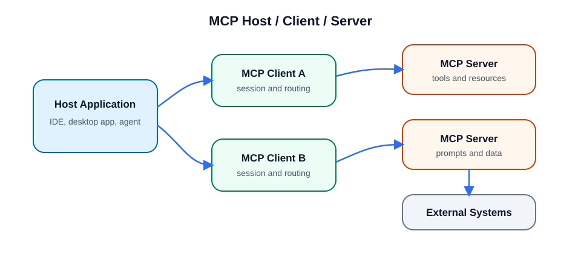
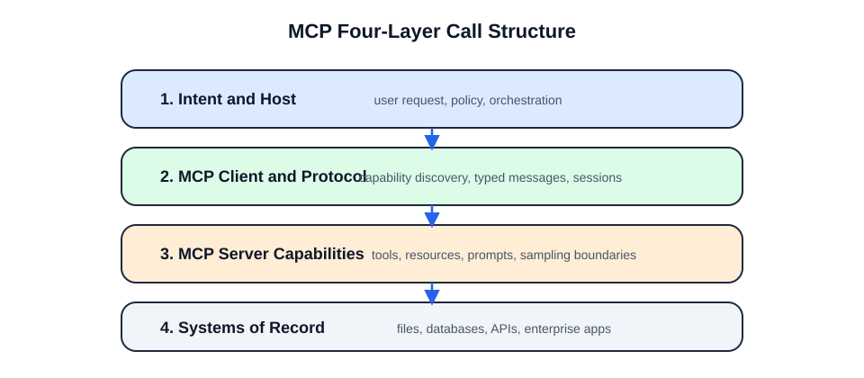
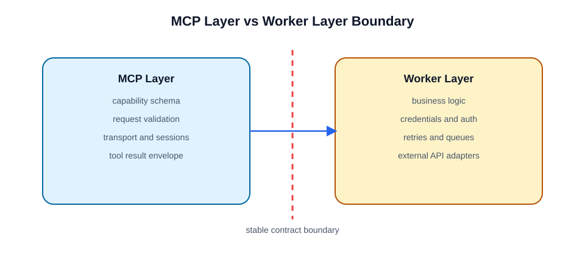
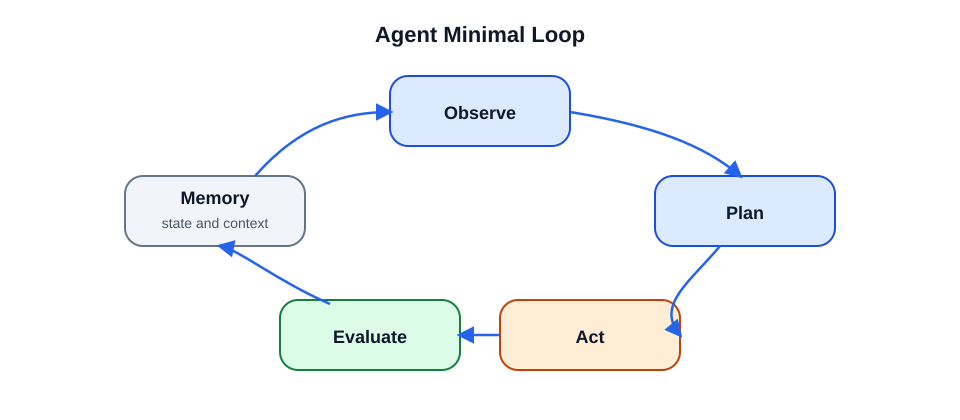
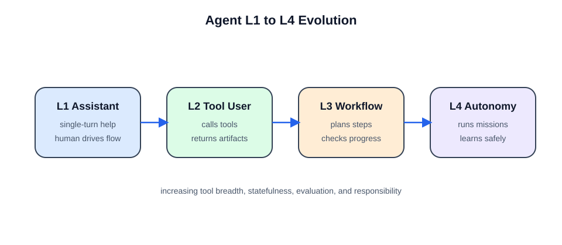
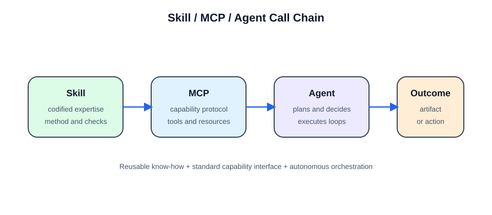

AI 能力工程：从 Skill、MCP 到 Agent¶
构建可复用、可调用、可验证的 AI 执行系统
作者：MathsionYang
主页：https://github.com/MathsionYang?tab=repositories
图书定位¶
这本书面向正在建设 AI 应用、Agent 系统、MCP 工具链和可复用 Skill 的开发者、产品经理、架构师与技术负责人。
本书不是单纯讲 Prompt，也不是只讲 MCP 协议或 Agent 框架，而是从工程视角回答一个核心问题：
如何把专家经验、外部工具和大模型推理能力组合成稳定、可治理、可验证的 AI 系统？
更具体地说，本书关注的是企业真实环境里的 AI 能力建设。这里的数据并不总是干净的，接口并不总是稳定的，业务规则也不总是能像代码一样被编译器验证。许多 Agent Demo 能在理想输入上跑通，但一旦进入合同、招标、财报、质检、客服和内部审批等场景，就会遇到扫描件、历史系统、模糊责任、权限边界和不可回滚风险。
因此，本书讨论的不是“怎样让模型看起来更像 Agent”，而是“怎样把不确定的模型能力放进一套确定的工程系统里”。
全书按照 Skill -> MCP -> Agent 的顺序展开：
- Skill：方法层，定义任务应该怎么稳定完成。
- MCP：能力层，定义外部系统、工具和资源如何被 AI 调用。
- Agent：执行层，负责理解目标、加载 Skill、调用 MCP、执行任务并验证结果。
这三个概念不是并列堆叠，而是一条工程链路：
也可以理解为：
适合读者¶
- 正在设计 AI Agent、AI 工具链或企业内部智能助手的开发者。
- 想把专家经验、业务流程、操作规范沉淀成可复用能力的产品和技术团队。
- 正在开发 MCP Server、Tool、Resource、Prompt 的工程师。
- 想从 Demo 走向生产级 AI 系统的架构师、技术负责人和 AI 应用开发者。
阅读路径建议¶
| 阅读目标 | 推荐章节 | 适合读者 |
|---|---|---|
| 快速建立整体认知 | 导论、第 1、6、12、17 章 | 初学者、产品经理 |
| 设计可复用 Skill | 第 1-5 章 | Skill 作者、流程专家 |
| 开发 MCP Server | 第 6-11 章 | 后端工程师、工具开发者 |
| 构建 Agent 系统 | 第 12-16 章 | Agent 开发者、架构师 |
| 落地生产系统 | 第 17-23 章、附录 | 技术负责人、平台团队 |
阅读分层标注¶
为避免不同读者被迫按同一深度阅读，本书建议再按层级选择：
- 入门必读：导论、第 1、6、7、8、12、13、17 章，先建立 Skill / MCP / Agent 的整体图景。
- 工程实践：第 3、5、9、10、11、14、15、16、20、21、22 章，重点理解契约、边界、验证、性能和安全。
- 架构进阶：第 6.8、6.9、10.8-10.9、11.11-11.14、第 23 章，重点理解协议演进、多语言选型、Client 集成和平台化治理。
每章末尾的“思考与练习”也按 ★/★★/★★★ 三档设计：★ 用来确认概念，★★ 用来迁移到真实场景，★★★ 用来训练系统设计和权衡能力。
目录¶
导论：AI 能力工程的三层结构¶
- 0.1 为什么不是只写 Prompt
- 0.2 Skill、MCP、Agent 分别解决什么问题
- 0.3 从“会回答”到“能完成任务”
- 0.4 本书的核心框架：方法、能力、执行
- 0.5 全书阅读方式
- 0.6 现实约束：干净世界与脏世界
第一部分：Skill，先把“怎么做”标准化¶
- 第 1 章 Skill 的核心定位
- 第 2 章 一个优秀 Skill 的标准结构
- 第 3 章 设计 Skill 的七步方法
- 第 4 章 Skill 的交互、边界与协同
- 第 5 章 Skill 质量标准与反模式
第二部分：MCP，再把“能做什么”协议化¶
- 第 6 章 MCP 的核心概念
- 第 7 章 第一个 MCP Server
- 第 8 章 Tools、Resources 与 Prompts
- 第 9 章 生产级 Tool 设计
- 第 10 章 MCP Server 工程架构
- 第 11 章 MCP 的测试、安全与运维
- 协议生命周期与四层架构
- C++ / YOLO 原生能力拆解
- 性能优化、错误重试、多语言选型
- MCP Client 与 Agent 框架集成
第三部分：Agent，最后组装成可执行系统¶
- 第 12 章 Agent 的核心概念
- 第 13 章 Agent 的最小闭环
- 第 14 章 Agent 系统核心组件
- 第 15 章 从零设计一个 Agent
- 第 16 章 Agent 如何使用 Skill 与 MCP
第四部分：从 Demo 到生产¶
- 第 17 章 端到端工作流设计
- 第 18 章 实战案例：代码安全审查系统
- 第 19 章 实战案例：合同与招标审查 Agent
- 第 20 章 实战案例：财报分析 Agent
- 第 21 章 实战案例：生产级质检 MCP Server
- 第 22 章 评估、监控与持续迭代
- 第 23 章 从个人工具到企业平台
附录¶
- 附录 A Skill 设计检查清单
- 附录 B MCP Server 上线检查清单
- 附录 C Agent 设计检查清单
- 附录 D 工具 schema 模板
- 附录 E 结构化错误返回模板
- 附录 F 权限矩阵模板
- 附录 G 人类确认与审批模板
- 附录 H MCP 故障排查速查表
- 附录 I 测试用例设计模板
- 附录 J 术语表
- 附录 K 参考资料
- 附录 L 优秀
SKILL.md模板 - 附录 M 思考题参考答案与要点提示
导论：AI 能力工程的三层结构¶
0.1 为什么不是只写 Prompt¶
Prompt 能让模型在一次对话中表现得更好，但它很难独自承担稳定交付、权限控制、错误处理、工具调用、验证闭环和长期复用这些工程要求。
当任务从“回答问题”变成“完成任务”时，系统必须回答更多问题：
- 任务应该按什么流程做？
- 什么时候应该追问用户？
- 需要调用哪些外部能力？
- 工具参数如何校验？
- 失败后如何重试、降级或停止？
- 结果如何证明是可靠的？
- 哪些动作必须经过用户确认？
这些问题不是 Prompt 单独能解决的。它们需要 Skill、MCP 和 Agent 分层协作。
0.2 Skill、MCP、Agent 分别解决什么问题¶
| 层级 | 解决的问题 | 核心产物 |
|---|---|---|
| Skill | 同类任务以后怎么稳定做 | 工作流、规则、边界、验证标准 |
| MCP | AI 能调用什么外部能力 | Tools、Resources、Prompts、schema |
| Agent | 谁来理解目标、调度流程并完成任务 | 计划、执行器、上下文、记忆、验证器 |
一句话总结：
Skill 给 Agent 方法，MCP 给 Agent 能力，Agent 把方法和能力组织成可执行闭环。
0.3 从“会回答”到“能完成任务”¶
普通 LLM 擅长理解和生成，但通常只输出文本。AI Agent 要进一步完成真实任务，需要：
- 理解目标。
- 拆解步骤。
- 调用工具。
- 读取外部数据。
- 执行动作。
- 检查结果。
- 必要时重新规划。
这意味着 AI 系统必须从“语言生成系统”升级为“任务执行系统”。
0.4 本书的核心框架：方法、能力、执行¶
本书采用三层框架：
如果没有 Skill，Agent 容易临场发挥。
如果没有 MCP，Agent 缺少稳定的外部行动能力。
如果没有 Agent，Skill 和 MCP 都只是静态规范或孤立工具。
0.5 全书阅读方式¶
本书建议按顺序阅读：
- 先理解 Skill，掌握如何把专家经验标准化。
- 再理解 MCP，掌握如何把外部能力协议化。
- 最后理解 Agent，掌握如何把方法和能力串成任务闭环。
0.6 现实约束：干净世界与脏世界¶
很多前沿 Agent 案例来自相对干净的任务环境。例如 Coding Agent 面对的是代码仓库、测试用例、编译器、版本控制和可回滚变更。任务拥有者和执行者通常是同一人，反馈也很快：测试通过就是通过，编译失败就是失败，改坏了还能回滚。
企业 Agent 面对的往往是另一种环境：扫描件 PDF、截图嵌套、历史系统 API、人工表格、模糊法规、审批链路和跨部门责任。这里没有统一的编译器，也不一定有标准答案。一次错误可能导致合同风险、财务误判、生产事故或客户损失，而且很多动作无法像代码提交一样轻松回滚。
两类环境的差异可以这样理解：
| 维度 | 干净世界 | 脏世界 |
|---|---|---|
| 输入 | 代码、结构化日志、稳定 API | 扫描件、历史文档、人工表格、口径冲突 |
| 反馈 | 编译、测试、diff、lint | 专家意见、业务复核、抽样检查、事后追责 |
| 风险 | 多数可回滚 | 很多结果不可回滚或回滚成本高 |
| 规则 | 语法清晰、边界明确 | “合理”“明显”“重大”等模糊判断普遍存在 |
| 成功标准 | 可客观验证 | 经常只能相对改进、降低漏审或节省人工 |
这不是说企业 Agent 做不了，而是不能只靠换模型、加长上下文或套用开源框架。企业落地需要把脏数据预处理、规则固化、权限控制、审计追踪、人工闸门和评估闭环放到模型之外。模型负责吸收不确定性，系统负责约束不确定性。
因此，本书后面的 Skill、MCP 和 Agent 分层，都应放在这个现实前提下理解：Skill 不是漂亮提示词，而是组织经验的显性化；MCP 不是工具包装，而是能力契约和治理边界；Agent 不是自主聊天机器人，而是受约束的任务执行系统。
第一部分：Skill，先把“怎么做”标准化¶
第一部分讨论 Skill。
在构建任何 Agent 或 MCP 工具之前，首先要明确任务应该如何被稳定完成。Skill 的价值在于把专家经验、判断规则、失败处理和验证标准沉淀为可复用的执行规范。
没有 Skill，Agent 容易变成临场发挥；有了 Skill，Agent 才能在同类任务中保持一致、可靠和可评估。
第 1 章 Skill 的核心定位¶
本章目标¶
理解 Skill 在 AI 能力工程中的位置，区分 Skill、Prompt、Tool、MCP 和 Agent 的边界。
1.1 Skill 是什么¶
优秀的 Skill，本质上是把某个领域的专家经验、工作流、工具使用方式和质量标准工程化沉淀，变成一套 AI Agent 可以稳定执行、按需扩展、失败可控、结果可验证的能力包。
相比普通 Prompt，Skill 不是一次性的表达技巧，而是可复用的标准作业程序。它要让 AI 在同类任务上少摸索、少犯错、少浪费上下文，并在关键时刻知道何时继续、何时追问、何时停止。
一个优秀 Skill 至少要回答七个问题：
- 什么时候应该触发这个 Skill？
- 这个 Skill 负责什么，不负责什么？
- Agent 应该按什么流程执行？
- 缺少信息时应该怎样向用户提问？
- 失败、部分成功或高风险操作时如何处理？
- 哪些资源、脚本、参考资料应按需加载？
- 如何验证这个 Skill 的输出质量？
1.2 Skill 与 Prompt 的区别¶
Prompt 解决的是“这一次怎么表达”。它适合临场、轻量、一次性任务。
Skill 解决的是“同类任务以后怎么稳定做”。它适合高频、复杂、有专家差距、有验证要求的任务。
好的 Skill 不应该只是长 Prompt，而应该包含：
- 触发条件。
- 适用范围。
- 操作流程。
- 信息搜集策略。
- 资源路由规则。
- 失败处理。
- 验证方法。
1.3 Skill 与 Tool 的区别¶
Tool 解决“能不能做”。例如搜索网页、读取文件、调用 API、操作浏览器、运行脚本。
Skill 解决“应该怎么做”。它告诉 Agent 什么时候用工具、按什么顺序用、失败后怎么办、结果如何验收。
例如：
- GitHub Tool 能读取 commit diff。
- 代码安全审查 Skill 规定如何筛选 commit、检查哪些漏洞、如何分级输出。
1.4 Skill 与 MCP 的关系¶
MCP 可以把外部工具、资源和提示词模板暴露给 AI 系统。Skill 可以引用这些能力，但 Skill 本身不是工具协议。
两者关系如下：
- MCP 负责“能力可调用”。
- Skill 负责“能力怎么组合使用”。
例如同样是 GitHub 能力，MCP 只需要稳定暴露 list_commits、get_diff、read_file 等 Tool；Skill 则规定代码审查时先看哪些提交、如何筛选风险、如何分级、如何输出证据和修复建议。前者是能力接口，后者是任务方法。
判断一段内容应该放进 Skill 还是 MCP，可以看它回答的是哪类问题：
| 问题 | 更适合 Skill | 更适合 MCP |
|---|---|---|
| 任务应该按什么顺序做 | 是 | 否 |
| 外部系统如何被调用 | 否 | 是 |
| 风险如何判断和分级 | 是 | 否 |
| 参数 schema、权限和错误码 | 可引用 | 是 |
| 输出是否满足任务标准 | 是 | 提供可验证字段 |
如果把流程规则塞进 MCP Tool，会导致工具只适合某一个任务；如果把工具协议细节塞进 Skill，会导致 Skill 难以迁移到新的工具实现。边界清楚时，Skill 可以复用多套 MCP 能力，MCP 也可以服务多个 Skill。
1.5 Skill 与 Agent 的关系¶
Agent 加载 Skill，就像执行者读取标准作业程序。
同一个 Agent，加载不同 Skill，就会获得不同领域的判断规则和执行流程。
Skill 决定 Agent 的行为边界，Agent 负责把 Skill 转化为真实行动。
这意味着 Skill 不是 Agent 的“知识补丁”，而是 Agent 执行任务时的操作规程。Agent 仍然负责理解用户目标、维护上下文、选择工具和处理异常；Skill 负责让这些动作不靠临场发挥，而是遵循稳定流程。
并不是每次任务都应该加载 Skill。以下情况通常不需要：
- 用户只是问一个简单事实或要求一次性解释。
- 任务没有稳定流程，仍处在开放探索阶段。
- 默认模型能力已经足够，且没有额外格式、风险或验证要求。
- 任务与 Skill 的
description只在关键词上相似，但交付物不同。
反过来，只要任务需要专业判断、固定交付格式、多工具协同、风险控制或验证闭环，就应该优先加载 Skill。好的 Agent 不追求“每件事都用 Skill”，而是能判断何时让 Skill 约束自己，何时保持轻量对话。
1.6 什么任务值得做成 Skill¶
适合做成 Skill 的任务通常有以下特征：
- 高频重复：经常发生，值得维护固定流程。
- 专家差距大：熟手和新手产出差异明显。
- 流程复杂：需要多步判断，单次 Prompt 难以稳定完成。
- 输入输出清晰：能描述需要什么材料、交付什么结果。
- 风险较高：出错会造成返工、数据问题、格式损坏或业务风险。
- 需要验证：不能只生成结果，还要检查结果是否正确。
- 需要工具协同：需要脚本、API、浏览器、文档渲染或文件处理。
1.7 什么任务不适合做成 Skill¶
不适合做成 Skill 的任务包括：
- 一次性闲聊。
- 没有稳定流程的开放式探索。
- 过于宽泛的“帮我提高效率”。
- 默认能力已经足够、且没有额外约束的简单任务。
本章小结¶
Skill 的本质不是提示词技巧，而是把专家经验、流程判断、失败处理和质量标准工程化沉淀。
思考与练习¶
- ★ 用自己的话解释 Skill 与 Prompt 的区别，并举一个“只写 Prompt 不够”的真实任务。
- ★★ 从你的日常工作中挑一个任务，判断它是否值得做成 Skill，并说明触发条件、边界和验证标准。
- ★★★ 设计一个“会议纪要整理”Skill 的职责边界：哪些事它应该做，哪些事应该交给 MCP Tool 或人类确认。
第 2 章 一个优秀 Skill 的标准结构¶
本章目标¶
掌握 Skill 包的常见目录结构，理解每类文件的职责和边界。
2.1 Skill 包的目录结构¶
一个标准 Skill 通常是一个文件夹，至少包含一个 SKILL.md 文件：
只有 SKILL.md 是必需的，其余目录按需添加。
2.2 SKILL.md 的作用¶
SKILL.md 是 Skill 的入口，由 YAML frontmatter 和 Markdown 正文组成：
---
name: skill-name
description: Clear description of what this skill does and when to use it.
---
# Skill Title
Instructions for the agent...
SKILL.md 应放核心流程和资源路由，不应该塞入所有细节。
2.3 frontmatter 如何影响触发¶
frontmatter 中最关键的字段是：
name：Skill 的唯一标识，使用小写字母、数字和连字符。description：Agent 判断是否触发 Skill 的主要依据。
description 必须同时说明：
- 能做什么。
- 何时使用。
- 适用的文件、工具、任务或业务场景。
- 关键排除场景。
不要把“什么时候使用这个 Skill”只写在正文里，因为正文只有在 Skill 已经触发后才会被读取。
2.4 agents/openai.yaml 与展示元数据¶
agents/openai.yaml 常用于 UI 展示 Skill 信息。
常见字段包括：
display_name：用户可读名称。short_description：一句话说明。default_prompt：用户可直接使用的默认请求。
这些字段应和 SKILL.md 保持一致。更新 Skill 后，要检查 UI 元数据是否已经过期。
2.5 scripts/：确定性操作的沉淀¶
scripts/ 用于存放可执行脚本，适合以下场景：
- 操作需要确定性和可重复性。
- 每次让 Agent 手写代码容易出错。
- 任务涉及格式转换、批处理、渲染、校验、迁移、打包等机械流程。
脚本必须经过代表性测试。进入 Skill 的脚本应被视为长期可复用组件，而不是临时草稿。
2.6 references/：复杂知识的按需加载¶
references/ 用于存放按需读取的详细资料，例如：
- API 文档。
- 数据库 schema。
- 公司政策。
- 领域知识。
- 复杂流程说明。
- 不同平台、框架、供应商的专门指南。
SKILL.md 应当只保留路由规则和核心流程，详细内容放入 references/。每个引用文件都应在 SKILL.md 中被明确提到，并说明何时读取。
2.7 assets/：模板、素材与可复用产物¶
assets/ 用于存放产出中会使用的资源，而不是给 Agent 阅读的资料。例如：
- 模板文件。
- Logo。
- 字体。
- 图片。
- 示例项目。
- 可复制的工程骨架。
2.8 一个最小 Skill 示例¶
---
name: code-review
description: Review code changes for correctness, security, and maintainability. Use when the user asks for code review or risk analysis of code changes. Do not use for general writing tasks.
---
# Code Review
## Workflow
1. Identify changed files.
2. Inspect relevant diffs.
3. Prioritize correctness, security, regression risk, and missing tests.
4. Report findings first, ordered by severity.
5. Include file and line references.
## Validation
- Verify claims against code.
- Do not invent behavior.
- Mention tests that were not run.
本章小结¶
好的 Skill 不是把所有知识写进一个长文档，而是把入口、路由、流程、资源、验证拆清楚。
思考与练习¶
- ★ 说明
SKILL.md、references/、scripts/和assets/各自适合承载什么内容。 - ★★ 把一个很长的 Prompt 改写成 Skill 包结构，标出哪些内容应放在入口文件，哪些应放入按需加载资源。
- ★★★ 为一个“生成投标文件”的 Skill 设计目录结构，并说明如何避免入口文件过长。
第 3 章 设计 Skill 的七步方法¶
本章目标¶
掌握从真实任务中提炼 Skill 的系统方法。
3.1 收集真实任务，而不是抽象方法论¶
先找 3 到 5 个真实案例，覆盖成功、失败、信息不足、边界情况。
不要只问专家“你的方法论是什么”，而要追问具体动作：
- 你拿到材料先看哪里？
- 什么信号会让你停下来追问？
- 哪些错误是新人经常犯的？
- 遇到例外情况你怎么处理？
- 做完后你怎么验收？
目标是提炼可执行流程，而不是写经验散文。
3.2 用 IPO 模型定义任务¶
像设计函数一样设计 Skill。
输入 Input：
- 用户必须提供什么？
- Agent 可以主动读取什么？
- 哪些信息缺失时不能开始？
- 哪些假设可以默认，哪些必须确认？
处理 Process：
- 标准执行顺序是什么？
- 哪些地方需要分支判断？
- 哪些步骤必须严格执行？
- 哪些步骤允许自由发挥？
输出 Output：
- 最终交付物是什么？
- 输出格式是什么？
- 文件保存在哪里？
- 是否需要报告、日志、摘要或验证结果？
边界 Boundary：
- 哪些情况不属于这个 Skill？
- 哪些情况必须暂停并询问用户？
- 哪些情况应该交给另一个 Skill 或工具？
3.3 设计信息搜集协议¶
优秀 Skill 不能只规定“做什么”，还要规定“信息不够时怎么问”。
提问策略应区分三类场景：
- 一次性追问：适合缺少多个独立信息，用户容易一次性补齐。
- 逐步澄清：适合需求本身还模糊，需要根据第一轮回答决定后续问题。
- 选项式提问：适合用户可能不知道专业选项，需要给出 2 到 4 个明确选择。
高风险、覆盖、删除、迁移、发布、生产环境操作前必须确认。确认时应复述目标路径、影响范围和即将执行的动作。
3.4 规划资源与渐进式披露¶
渐进式披露的目标是让 Agent 只加载当前任务真正需要的信息。
推荐三层结构：
- 元数据：
name和description，始终在上下文中。 SKILL.md正文：触发后加载，只放核心流程和路由。- 资源文件：按需读取或执行。
SKILL.md 应尽量短，能放进 references/ 的细节，不要塞进正文。资源路由要写成强指令，而不是弱建议。
弱路由：
强路由：
3.5 根据风险设置自由度¶
根据任务风险决定 Skill 的约束强度。
| 自由度 | 适用任务 | Skill 写法 |
|---|---|---|
| 高自由度 | 文案、头脑风暴、方案比较 | 给原则和启发式规则 |
| 中自由度 | 有推荐流程但允许调整的任务 | 给伪代码、参数表、分支规则 |
| 低自由度 | 文件格式脆弱、生产系统、批量迁移、合规流程 | 给脚本、固定命令、校验步骤、回滚策略 |
原则：越脆弱、越高风险、越需要一致性，就越应该降低自由度。
企业场景里还要特别处理“模糊规则”。很多业务规则不是写错了，而是故意保留解释空间，例如合同里的“合理期限”、招标文件里的“明显标志”、风控规则里的“重大异常”。这类词不能直接交给 Agent 临场解释，否则同一类任务会因为上下文、模型版本或措辞变化而得出不同结论。
更稳的做法是：让 LLM 做判断，不让 LLM 做定义。业务专家应先把模糊词拆成 3 到 5 个可执行判断标准，并把这些标准写进 Skill 或配置文件。
| 模糊表达 | 可工程化规则示例 |
|---|---|
| 合理期限 | 明确起算点、截止点、工作日/自然日口径、超过阈值后的风险等级 |
| 明显标志 | 明确必须出现的位置、字号、颜色、编号、盖章或签名要求 |
| 重大风险 | 明确金额阈值、责任主体、违约后果、审批层级和人工复核条件 |
这样做的价值不是消灭业务判断，而是让判断可以解释、协商、版本化。规则变更时改配置或 Skill，不需要靠改 Prompt 来追踪组织口径。
3.6 设计失败处理和回退机制¶
复杂任务中，失败和部分成功是常态。优秀 Skill 必须定义状态、检查点和升级条件。
建议区分四种状态：
Not started：尚未执行，会先检查输入和权限。In progress：正在执行，应记录关键中间状态。Partial success：部分完成，必须说明完成了什么、未完成什么。Failed safely：失败但保留现场，不掩盖错误，不继续猜测。
长链条任务应设计检查点：
- 每完成一个阶段，确认产物或状态。
- 对批量操作记录已处理项和未处理项。
- 对文件修改保留可比较的 diff 或输出路径。
- 对迁移、发布、覆盖类任务说明回退方式。
以下情况应暂停并询问用户，而不是自行猜测：
- references 未覆盖的例外。
- 置信度不足。
- 输入和用户目标冲突。
- 验证失败且无法定位原因。
- 继续执行可能造成数据丢失、覆盖、发布或权限风险。
3.7 设计验证与评测体系¶
Skill 不应只规定如何产出，还要规定如何证明产出可靠。
单次任务验证包括：
- 运行测试。
- 执行校验脚本。
- 渲染并目视检查。
- 比较 schema 或格式。
- 检查命令退出码。
- 检查目标文件是否存在。
- 报告验证命令和结果。
Skill 开发期可维护 eval suite，覆盖正常、缺参、边界和失败场景。
可量化指标包括：
- 任务成功率。
- 首轮正确率。
- 关键步骤遗漏率。
- 平均交互轮次。
- 验证通过率。
- 失败后是否正确暂停或升级。
本章小结¶
Skill 的设计过程应像设计一个稳定函数：输入明确、处理可控、输出可验、边界清楚。
思考与练习¶
- ★ 用 IPO 模型解释一个 Skill 的 Input、Process、Output 分别是什么。
- ★★ 为“代码安全审查”补全输入缺失时的追问策略和失败处理策略。
- ★★★ 选择一个复杂业务任务，按七步方法写出 Skill 设计草案，并列出至少 3 个验证样本。
第 4 章 Skill 的交互、边界与协同¶
本章目标¶
理解 Skill 如何处理缺失信息、高风险动作、多 Skill 冲突和职责外请求。
4.1 什么时候应该追问用户¶
以下情况应追问用户：
- 缺少会实质改变交付结果的信息。
- 继续执行可能造成覆盖、删除、发布、外发或费用风险。
- 用户目标与已有约束冲突。
- 多条合理路径都会产生不同结果，且无法从上下文判断偏好。
以下情况不应过度追问：
- 有合理默认值。
- 答案可通过读取上下文或文件得到。
- 用户意图已经足够明确。
4.2 一次性追问与逐步澄清¶
一次性追问适合配置型信息，例如目标环境、输入路径、输出格式、是否允许覆盖。
逐步澄清适合开放式需求，例如“做一个分析系统”“设计一个 Agent”“整理一套流程”。
好的 Skill 应明确告诉 Agent：什么时候一次性问完，什么时候只问一个关键问题。
选择追问方式可以看三个维度：
| 维度 | 一次性追问 | 逐步澄清 |
|---|---|---|
| 信息类型 | 客观配置、路径、格式、版本 | 目标、偏好、范围、权衡 |
| 用户负担 | 一次填写较多内容 | 每轮只做一个关键判断 |
| 错误代价 | 漏一项会阻塞执行 | 问太多会让方向过早固化 |
例如“把这个文件转换成 PDF”可以一次性问清输入路径、输出位置、是否覆盖旧文件；但“帮我设计一个企业知识库 Agent”不应一次问十几个问题。更好的做法是先确认目标用户和核心任务，再逐步展开权限、数据源、评估和上线范围。
一个实用规则是：如果答案可以从文件、配置或上下文中读取，就先读取；如果问题之间相互独立，就一次性追问；如果后一个问题依赖前一个答案，就逐步澄清。
4.3 高风险动作前的确认机制¶
高风险动作包括：
- 删除或覆盖文件。
- 修改生产数据。
- 发送邮件或消息。
- 发起支付或订单。
- 发布服务或迁移数据。
确认前应说明：
- 即将执行什么。
- 影响哪些对象。
- 是否可回滚。
- 不执行会有什么替代方案。
4.4 多 Skill 协同时如何确定主 Skill¶
当多个 Skill 都可能适用时，应确定一个主 Skill。
主 Skill 通常由最终交付物决定。例如：
- 用户要创建 Word 文档，文档 Skill 是主 Skill。
- 用户要上传设计到 Stitch，Stitch 上传 Skill 是主 Skill。
- 用户要构建宠物动画，宠物 Skill 是主 Skill。
辅助 Skill 只提供局部方法，不应覆盖主 Skill 的交付标准。
4.5 Skill 之间的职责边界¶
每个 Skill 都应说明：
- 自己负责什么。
- 不负责什么。
- 何时交给另一个 Skill。
- 与其他 Skill 冲突时谁优先。
边界不清的 Skill 会导致 Agent 在复杂任务中反复切换策略，浪费上下文并增加错误率。
4.6 冲突检测与仲裁规则¶
常见冲突包括：
- 一个 Skill 要求快速执行，另一个要求先完整设计。
- 一个 Skill 要求生成文件，另一个要求只输出文本。
- 一个 Skill 要求低自由度执行，另一个允许自由发挥。
仲裁原则：
- 用户明确指令优先。
- 交付物主 Skill 优先。
- 安全、权限和验证规则优先于效率规则。
- 不确定时暂停并说明冲突。
4.7 职责外请求如何拒绝或交接¶
真实系统里，用户不一定只问当前 Agent 或 Skill 擅长的事。此时不要为了“显得有用”而硬调用工具，也不要把请求牵强映射到相近能力。
推荐处理流程：
- 先做职责匹配。
- 匹配明确时再执行。
- 缺少参数但职责匹配时追问。
- 职责不匹配时明确说明并给出交接建议。
- 不能假装执行。
结构化拒绝示例：
{
"status": "rejected",
"reason": "out_of_scope",
"message": "当前能力只支持代码审查任务，不能处理订票请求。",
"handoff_hint": "请交接给具备航班查询或订单能力的 Agent。"
}
本章小结¶
优秀 Skill 不仅告诉 AI 怎么完成任务，也告诉 AI 什么时候不该继续。
思考与练习¶
- ★ 列出 3 种 Skill 应该追问用户的情况，以及 3 种应该直接执行的情况。
- ★★ 为“删除生产数据”设计一次高风险确认话术，必须包含影响范围、替代方案和回滚说明。
- ★★★ 设计两个可能冲突的 Skill，并写出主 Skill 选择和仲裁规则。
第 5 章 Skill 质量标准与反模式¶
本章目标¶
建立评估 Skill 质量的统一标准。
5.1 触发是否精准¶
description 应清楚说明能力、对象、场景和排除条件。
不推荐：
推荐：
description: Create, edit, inspect, render, and verify professional .docx documents. Use when working with Word documents or Google Docs-targeted artifacts. Do not use for PDFs or live Google Docs editing.
5.2 职责是否单一¶
一个 Skill 不应该同时覆盖过多无关任务。职责越宽，触发越容易误判，流程越难稳定。
判断职责是否单一，可以看三个问题：
- 是否服务于同一类输入。
- 是否产出同一类结果。
- 是否共享同一套验证标准。
例如“审查 Pull Request 的安全风险”可以是一个 Skill，因为它围绕 diff、风险类型、严重程度和修复建议展开；但“审查代码、生成 PPT、部署服务、写日报”不应该放进同一个 Skill。后者看似方便，实际会让 description 变得模糊，Agent 也很难判断该使用哪条流程。
职责过宽的典型后果是：触发频率上升，但完成质量下降。一个过宽 Skill 往往会包含多套输入格式、多套工具链和多套验收标准，最后变成一个难以维护的“超级提示词”。更好的做法是拆成多个 Skill，并通过职责边界说明它们如何交接。
5.3 工作流是否明确¶
Skill 应提供可执行步骤，而不是抽象建议。
推荐结构：
## Workflow
1. Inspect inputs.
2. Choose workflow branch.
3. Execute transformation.
4. Verify output.
5. Report result and limitations.
5.4 输入输出是否可检查¶
Skill 应说明：
- 输入来自哪里。
- 缺失输入如何处理。
- 输出保存在哪里。
- 输出格式是什么。
- 如何确认输出完整。
5.5 失败是否可控¶
失败处理应覆盖：
- 工具失败。
- 输入格式异常。
- 权限不足。
- 输出验证失败。
- 部分成功。
- 无法继续执行。
5.6 验证闭环是否完整¶
Skill 应要求 Agent 证明结果可靠，而不是只声明完成。
验证证据可以是：
- 测试输出。
- 校验脚本结果。
- 渲染截图。
- 文件存在性检查。
- schema 对比。
- 人工确认记录。
5.7 上下文是否经济¶
好的 Skill 会控制上下文成本：
SKILL.md只放核心流程。- 大文档放入
references/。 - 资源按需加载。
- 不把整份 API 文档塞进入口文件。
5.8 常见 Skill 设计反模式¶
常见反模式包括：
description太泛。- 把正文写成百科。
- 只写成功路径。
- 缺少交互策略。
- 没有验证闭环。
- 脚本没有测试。
- 多 Skill 边界不清。
- 上下文浪费。
5.9 Skill 发布前检查清单¶
-
description是否清楚说明何时使用与何时不用？ - 是否有明确输入、输出和边界？
- 是否有稳定工作流？
- 是否规定缺参时如何提问？
- 是否定义失败状态和回退策略？
- 是否说明需要读取哪些 reference？
- 是否包含验证步骤？
- 是否避免把所有知识塞进
SKILL.md？ - 是否有代表性测试或 eval？
本章小结¶
判断一个 Skill 是否优秀，不看它写得多完整，而看它能否稳定指导 Agent 少走弯路、少犯错、可复用、可验证。
思考与练习¶
- ★ 用 5.9 检查清单评估一个你写过或见过的 Skill，指出最薄弱的一项。
- ★★ 写一个职责过宽的 Skill
description，再把它拆成两个更精准的描述。 - ★★★ 为一个即将发布的 Skill 设计最小 eval：包含正常、缺参、失败和高风险样本。
第二部分：MCP，再把“能做什么”协议化¶
第二部分讨论 MCP。
当 Skill 定义了“应该怎么做”之后，下一步要解决的问题是：AI 到底通过什么方式读取文件、调用 API、执行程序、访问外部系统？这正是 MCP 要解决的问题。
MCP 的价值不是让工具更“智能”，而是让工具以统一、可发现、可校验、可审计的方式暴露给 AI 系统。
第 6 章 MCP 的核心概念¶
本章目标¶
理解 MCP 的定位、架构和三类能力。
6.1 MCP 是什么¶
MCP，即 Model Context Protocol，模型上下文协议，是一种开放标准协议，用于统一 AI Host 与外部工具、数据源和服务之间的连接方式。
MCP 的核心思路是：
所有 AI 应用和所有外部服务都遵循同一套通信协议。
一个 MCP Server 写一次，所有支持 MCP 的 Host 都能使用。
6.2 MCP 解决的集成问题¶
在 MCP 出现前，每个 AI 应用想连接外部服务，都要单独写一套集成代码。
如果有 10 个 AI 应用和 10 个外部服务，就可能出现 100 套集成代码。
MCP 通过标准协议降低了集成复杂度。
更重要的是，MCP 降低的不只是代码数量，而是集成语义的不确定性。没有统一协议时，每个工具都要重新解释“有哪些能力”“参数怎么传”“错误怎么表达”“大结果怎么返回”“是否需要用户授权”。这些差异会进入 Agent 的上下文，让模型靠临场推理适配每个工具。
MCP 把这些差异尽量前移到契约层：
| 集成问题 | 没有 MCP 时 | 使用 MCP 后 |
|---|---|---|
| 能力发现 | 文档、人肉配置或硬编码 | tools/list、resources/list、prompts/list |
| 参数说明 | 自然语言说明为主 | schema + 描述 |
| 调用结果 | 每个 API 风格不同 | content 与 structuredContent |
| 错误处理 | HTTP 状态码、异常、字符串混杂 | 结构化错误与可恢复语义 |
| Host 接入 | 每个应用单独适配 | Client 复用同一协议流程 |
一个常见误解是：MCP 只是“给 API 包一层”。如果只是把内部 API 原样透出，没有补 schema、权限边界、错误码、分页、审计和资源语义，那么它只是换了入口，并没有真正降低 Agent 的使用成本。
6.3 Host、Client、Server 的分工¶
| 概念 | 角色 |
|---|---|
| Host | 运行 AI 模型和用户交互界面的宿主应用 |
| MCP Client | 嵌入 Host 的协议客户端，负责连接 Server、发现能力、调用工具 |
| MCP Server | 协议服务端，向 Host 暴露 Tools、Resources、Prompts |
典型架构：
也可以画成更接近工程实现的图：

6.4 Tools、Resources、Prompts 三种能力¶
MCP Server 向 AI 暴露三类能力：
- Tools：AI 可以调用的操作，例如创建 Issue、查询数据库、运行检测任务。
- Resources：AI 可以读取的数据，例如文件内容、数据库 schema、日志、项目配置。
- Prompts：预置提示词模板，例如代码审查模板、质检规划模板。
三者的关键差异在于“是否执行动作”和“是否改变外部状态”：
| 能力 | 主要用途 | 是否通常有副作用 | 设计重点 |
|---|---|---|---|
| Tool | 执行动作或计算 | 可能有 | 参数校验、权限、错误、幂等 |
| Resource | 提供上下文 | 通常没有 | URI、权限、大小控制、时效性 |
| Prompt | 提供标准提示模板 | 不应有 | 变量、适用场景、输出约束 |
例如“读取订单详情”更适合设计为 Resource 或只读 Tool；“取消订单”必须设计为 Tool，并且需要权限、确认和审计；“生成售后回复草稿”可以设计为 Prompt 模板，但不应在 Prompt 内偷偷发送邮件。
设计时要避免把三者混用。把只读资料做成有副作用 Tool，会增加误调用风险；把动作藏在 Prompt 里，会绕开权限和审计；把大段静态资料塞进 Tool 返回值，会浪费上下文并破坏分页与缓存策略。
6.5 MCP 与普通 API 的区别¶
普通 API 面向程序员，MCP 面向 AI Host 和 Agent。
MCP 不只是提供接口，还要提供：
- 工具发现。
- 参数 schema。
- 结构化返回。
- 资源读取。
- 提示词模板。
- 进度、取消、错误等协议语义。
6.6 MCP 与 Skill 的边界¶
MCP 只负责“能做什么”，Skill 负责“怎么做”。
例如：
- MCP Tool 能读取 GitHub commit。
- Skill 规定如何做代码安全审查。
- Agent 按 Skill 调用 MCP Tool。
这条边界在项目早期最容易混淆。开发者常把审查流程写进 Tool 描述里，或者把具体 API 参数写进 Skill 主流程里。前者会让 Tool 变得过度业务化，后者会让 Skill 绑定某个实现，二者都会降低复用性。
一个更稳的划分方式是：
| 问题 | 放在 Skill | 放在 MCP |
|---|---|---|
| 先看哪些证据、后看哪些证据 | 是 | 否 |
| 风险如何分级 | 是 | 否 |
| 如何读取 diff | 否 | 是 |
| 参数类型和边界 | 可引用 | 是 |
| 调用失败如何表达 | 可规定处理策略 | 是 |
| 结果是否合格 | 是 | 提供可验证字段 |
如果明天把 GitHub 换成 GitLab，理想情况下代码审查 Skill 不需要重写，只需要换一组 MCP Tools。反过来，如果审查标准从安全审查变成性能审查，MCP Tools 仍可复用，变化主要发生在 Skill。
6.7 MCP 在 AI 能力工程中的位置¶
MCP 是能力层。
它不替代 Skill，也不替代 Agent。它让 Agent 可以稳定地调用外部世界。
可以把三层关系理解为一次任务执行中的分工：
Skill 规定：先找证据，再分级，再输出修复建议
MCP 提供：list_commits、get_diff、read_file、create_issue
Agent 负责：理解用户目标，选择 Skill，调用 MCP，检查结果
MCP 的位置很关键，因为它连接的是不可控的外部世界：文件系统、数据库、浏览器、企业系统、原生程序、云服务。越靠近外部世界，越需要明确的权限、契约、错误处理和审计。
因此，MCP 层的成熟度通常决定 Agent 能否从 Demo 走向生产。没有 MCP，Agent 只能“说”；有了粗糙 MCP，Agent 能“试着做”；有了生产级 MCP，Agent 才能在边界内稳定地做、失败时可恢复、出问题时可追踪。
6.8 MCP 生命周期：从握手到无状态请求¶
理解 MCP 时要注意协议版本差异。旧版资料常把 MCP 生命周期讲成“初始化握手 -> 能力发现 -> 工具调用”。在旧实现中，Client 通常先发送 initialize，Server 返回协议版本、Server 信息和能力，Client 再发送 notifications/initialized 表示初始化完成。
但在较新的无状态请求模型中，Server 不再必须依赖协议级 session，也不要求每次连接都先完成三步握手。每个请求都应携带必要的协议版本、Client 身份和能力信息，Server 可以独立处理请求，因此更适合 HTTP 负载均衡、弹性扩缩容和无共享会话部署。
典型调用链可以简化为：
Client
-> 可选 server/discover
-> tools/list / resources/list / prompts/list
-> tools/call / resources/read
-> Server 返回 content + structuredContent
实践建议：
- 自研 Host 第一次连接未知 Server 时，可以先做服务发现。
- 内部固定 Server 可以直接按需调用
tools/list或业务 Tool。 - 能力发现结果可以缓存，但要根据 Server 版本、工具列表变化或缓存 TTL 失效。
- 新项目不应把旧版
initialize/initialized当成必需流程；兼容旧 Client 或旧 SDK 时再保留。 - 具体头部、
_meta字段和 SDK 封装方式，应以当前使用的 SDK 文档和契约测试为准。
6.9 MCP 四层架构：通信、传输、协议、应用¶
官方规范通常把通信、传输和协议归入传输层讨论。为了教学和排障，可以把一次 MCP 调用拆成四层：
| 层 | MCP 含义 | 核心问题 |
|---|---|---|
| 通信层 | stdio 或 Streamable HTTP 等连接方式 | 通过什么通道交付消息 |
| 传输层 | 字节流与对象之间的序列化和反序列化 | 消息如何被搬运 |
| 协议层 | JSON-RPC 请求、响应、通知 | 消息如何被规范表达 |
| 应用层 | Tools、Resources、Prompts | Server 到底暴露什么能力 |
一次完整调用可以这样理解：
应用层：AI 决定调用 greet，传入 {"name":"小明"}
协议层：封装为 JSON-RPC tools/call 请求
传输层：序列化为 JSON 字节流
通信层：通过 stdio 管道或 HTTP 请求交付给 Server
Server 执行后再按相反方向返回结果
四层关系可以用一张分层图表示：

这套分层在排障时很有用：
- Host 看不到 Server，优先查通信层和启动配置。
tools/list为空，优先查应用层注册和协议层 schema。- 参数传错，优先查协议层 schema 和工具描述。
- 工具执行慢，通常查应用层 Worker、数据库、外部 API 或大结果序列化。
本章小结¶
MCP 不是 Agent，也不是 Skill。MCP 的价值在于把外部能力标准化暴露给 AI 系统。理解 MCP 时既要看 Host / Client / Server 的角色，也要看生命周期、能力发现和四层调用链；否则很容易把协议问题、传输问题和业务工具问题混在一起。
思考与练习¶
- ★ 画出 Host、Client、Server 的一次工具调用链，并标注每一层职责。
- ★★ 判断“发送邮件”“读取数据库 schema”“生成客服回复模板”分别适合设计成 Tool、Resource 还是 Prompt，并说明原因。
- ★★★ 为一个已有内部 API 设计 MCP 化改造方案：哪些能力暴露为 Tool，哪些暴露为 Resource，哪些信息必须进入 schema。
第 7 章 第一个 MCP Server¶
本章目标¶
跑通一个最小 MCP Server，理解 Server 启动、Host 发现和 Tool 调用的基本链路。
7.1 开发环境准备¶
推荐先使用 Python 和 FastMCP 入门。
入门阶段不要手写 stdio 或 HTTP 协议帧，先用 SDK 把工具跑起来。
7.2 使用 FastMCP 创建 Server¶
这三行代码只完成了一件事：创建一个 MCP Server 实例。"Hello MCP" 是 Server 名称，Host 展示能力来源、日志排障和多 Server 治理时都会用到它。名称应简短、稳定、能说明服务职责，例如 github-review-tools、finance-report-reader，不要使用 test、demo 这类上线后无法辨认的名字。
此时 Server 还没有任何能力。只有注册 Tool、Resource 或 Prompt 后，Host 才能在能力列表中看到它。入门时建议先注册一个无副作用、参数简单、返回稳定字符串的 Tool，用它验证“Server 能启动、Host 能发现、Client 能调用”这条最短链路。
如果这一步失败，先不要排查业务代码。优先确认 Python 环境、包版本、启动命令、工作目录和 stdout 日志是否干扰协议输出。
7.3 注册第一个 Tool¶
函数名和 docstring 会成为 AI 看到的工具描述，参数类型注解会影响输入 schema。
7.4 注册第一个 Resource¶
@mcp.resource("echo://{message}")
def echo_resource(message: str) -> str:
"""返回用户输入的消息"""
return f"你说的是: {message}"
Resource 适合读取数据，不应产生副作用。
7.5 配置到 Host¶
本地 stdio 方式通常需要配置命令和脚本路径：
{
"mcpServers": {
"hello-world": {
"command": "python",
"args": ["D:/your/path/hello_server.py"]
}
}
}
如果使用虚拟环境，建议把 command 写成虚拟环境里的 Python 绝对路径，避免 Host 启动时找错解释器。
7.6 使用 Inspector 调试¶
MCP Inspector 可以帮助确认：
- Server 是否启动。
- Tool 是否注册。
- Resource 是否可读。
- 参数 schema 是否正确。
- 工具调用是否返回预期结果。
7.7 常见启动问题排查¶
常见问题包括：
- Host 找不到 Python。
- 虚拟环境不一致。
- 脚本路径错误。
- Server 把日志写到 stdout 干扰协议。
- Tool 没有注册。
- 装饰器破坏函数签名。
排障顺序：
- 确认 Server 能独立启动。
- 确认 Host 配置路径正确。
- 确认 Inspector 能看到工具列表。
- 确认
tools/call能成功调用。
本章小结¶
学习 MCP 的第一目标不是理解所有协议细节，而是先跑通 Server 启动、Host 发现、Tool 调用这条链路。
思考与练习¶
- ★ 说明一个最小 MCP Server 从启动到被 Host 发现至少要满足哪些条件。
- ★★ 如果 Host 中看不到你的 Server，请按通信层、配置层、注册层写出排查顺序。
- ★★★ 设计一个“本地文件摘要”MCP Server 的最小版本，包括 Tool、Resource 和测试步骤。
第 8 章 Tools、Resources 与 Prompts¶
本章目标¶
理解 MCP 三类能力的语义边界和组合方式。
8.1 Tool：让 AI 执行动作¶
Tool 适用于 AI 需要执行一个操作、触发一次计算、修改一些数据的场景。
示例：
@mcp.tool()
def create_issue(title: str, body: str) -> str:
"""在 GitHub 仓库中创建一个 Issue"""
return f"Issue '{title}' created."
Tool 可能有副作用，因此必须清楚描述用途、参数和风险。
8.2 Resource：让 AI 读取上下文¶
Resource 适用于 AI 需要读取数据但不触发副作用的场景。
@mcp.resource("file://notes/{name}")
def get_note(name: str) -> str:
"""读取笔记内容"""
return read_note(name)
Resource 是名词化能力，强调“读取某个东西”。
8.3 Prompt：让 AI 使用标准提示模板¶
Prompt 适用于你希望 AI 在特定场景下使用预设提示词模板。
@mcp.prompt()
def code_review(code: str, language: str) -> str:
"""为代码审查提供标准提示词"""
return f"请审查以下 {language} 代码，关注安全、性能和可读性：\n\n{code}"
Prompt 可以带动态参数，也可以组合上下文。
8.4 Tool 与 Resource 的边界¶
| 对比项 | Tool | Resource |
|---|---|---|
| 语义 | 做一件事 | 读一个东西 |
| 形态 | 动词 | 名词 |
| 副作用 | 可能有 | 没有 |
| 示例 | 创建 Issue、运行检测、查询 API | 读取文件、读取配置、读取 schema |
如果一个操作会写入、提交、触发外部流程，就应设计成 Tool。
如果只是读取上下文，就应设计成 Resource。
8.5 Prompt 为什么不应该偷偷执行副作用动作¶
Prompt 可以组合数据和规则，但不应该在 Prompt 内执行高风险动作。
需要联网、写文件、启动 EXE、提交工单时，应把动作拆成 Tool，让 Host 和用户能看见并审计。
原因很简单：Prompt 是“指导模型如何思考和表达”的模板，不是权限边界。如果把“发送邮件”“删除文件”“提交审批”这类动作藏在 Prompt 中，Host 很难在动作发生前展示风险、检查权限、记录审计或要求用户确认。
反例：
这句话如果出现在 Prompt 中，就绕过了 Tool 的 schema、权限、日志和失败处理。更好的做法是把“生成摘要”放在 Prompt，把“发送邮件”设计成 Tool，并要求 Agent 在调用前展示收件人、主题、正文摘要和附件清单。
判断标准是：只要动作会改变外部状态、消耗真实资源、影响他人或产生不可自动撤销的后果，就不应隐藏在 Prompt 中。
8.6 三类能力如何组合¶
一个生产级 MCP Server 可能同时提供：
- Resource：读取当前项目配置。
- Prompt：生成质检计划。
- Tool：提交质检任务。
- Tool：查询任务状态。
- Resource：读取最终报告。
组合时应保持职责清晰，不要让一个 Tool 变成万能入口。
8.7 面向 Agent 的能力描述原则¶
好的工具描述应包含：
- 工具做什么。
- 工具不做什么。
- 关键参数含义、单位和边界。
- 是否有副作用。
- 常见失败和处理建议。
描述不要承诺工具做不到的事。
本章小结¶
MCP Server 暴露的不只是函数，而是一组可被 AI 理解、选择、调用和审计的能力。
思考与练习¶
- ★ 用一句话分别解释 Tool、Resource、Prompt 的核心用途。
- ★★ 找一个“该用 Resource 却误做成 Tool”的例子，说明它会带来什么问题。
- ★★★ 设计一个订单系统 MCP 能力集，明确哪些能力只读、哪些有副作用、哪些需要人类确认。
第 9 章 生产级 Tool 设计¶
本章目标¶
掌握生产级 MCP Tool 的输入、输出、错误、分页、异步和产物契约设计。
9.1 为什么生产 Tool 不能只返回字符串¶
纯字符串只适合教学示例。生产环境不要让业务 Tool 只返回自然语言，因为下游无法稳定判断：
- 任务是否成功。
- 错误码是什么。
- 是否可重试。
- 产物在哪里。
- 分页游标是什么。
- 统计字段如何读取。
生产 Tool 应同时服务人和机器。
9.2 输入参数 schema¶
schema 是工具的参数说明和约束。它让工具调用从“自然语言猜测”变成“结构化执行”。
示例：
{
"name": "search_public_filings",
"description": "按股票代码和年份搜索上市公司公开财报。",
"input_schema": {
"type": "object",
"properties": {
"ticker": {
"type": "string",
"description": "股票代码，例如 NVDA"
},
"fiscal_year": {
"type": "integer",
"description": "财年，例如 2025"
},
"filing_type": {
"type": "string",
"enum": ["annual_report", "10-K", "10-Q"]
}
},
"required": ["ticker", "fiscal_year"]
},
"output_schema": {
"type": "object",
"properties": {
"title": {"type": "string"},
"url": {"type": "string"},
"source": {"type": "string"},
"published_date": {"type": "string"}
}
}
}
上面是面向讲解的 JSON Schema 风格示例。实际项目中，schema 可能由 Pydantic、Zod、Java Bean、Go struct tag 或 SDK 自动生成，但最终应能被 Host 和 Agent 稳定理解。
9.3 参数边界校验¶
类型注解只能说明参数类型，不能表达业务边界。生产环境建议用 Pydantic Field 表达范围、长度、枚举和分页上限。
from typing import Annotated
from pydantic import Field
@mcp.tool()
def search_docs(
keyword: Annotated[str, Field(min_length=1, max_length=100)],
page_size: Annotated[int, Field(ge=1, le=100)] = 20,
) -> ToolResult:
"""搜索文档。"""
...
把边界写进 schema 后，Host 和 LLM 更容易传对参数，服务端也能更早拒绝危险或无意义的输入。
9.4 content 与 structuredContent¶
推荐 Tool 同时返回：
content：给调用 MCP 的 LLM 读，用自然语言总结。structuredContent：给平台、下游工具、自动化流程读，用稳定字段表达状态、数据和产物。
Python / FastMCP 代码里通常写 structured_content，序列化到协议消息后常见字段名是 structuredContent。
示例：
return ToolResult(
content=f"查询完成，返回 {len(rows)} 行。",
structured_content={
"status": "success",
"row_count": len(rows),
"rows": rows,
},
)
9.5 结构化错误返回¶
失败时也应返回结构化状态：
return ToolResult(
content="查询失败：SQL 不能为空。",
structured_content={
"status": "error",
"error": {
"code": "INVALID_SQL",
"message": "SQL 不能为空"
},
"retryable": False
},
)
好的错误返回可以帮助 Agent 决定下一步是重试、换工具、降级输出，还是请求用户帮助。
9.6 大结果截断与分页¶
Tool 返回值会进入 LLM 上下文。一次返回 10 万行 SQL、几 MB 日志或完整 HTML 报告，会拖慢模型、挤爆上下文窗口，还可能让用户看不懂。
推荐策略：
- 返回前估算
content + structured_content的 JSON 大小。 - 超过阈值就截断。
- 返回
truncated=true、next_page_token、returned_rows、total_rows。 - 提供
get_next_page这类只读 Tool。 - 大文件放到 artifacts 或 Resource URI 里交接。
9.7 长任务异步化¶
很多生产 Tool 不是瞬间返回的，例如模型推理、批量影像检查、数据库大查询。
长任务优先设计成异步任务：
- 提交任务后返回
task_id。 - 用
get_task_status查询状态。 - 用 artifact 或 Resource 交接最终结果。
- 进度通知只表达任务仍在运行，不代替最终报告。
9.8 产物 Artifact 交接¶
当 Tool 生成文件时，不应把完整文件内容全部塞进返回值。
结构化返回中应包含：
- 产物类型。
- 文件路径或 URI。
- 文件大小。
- 内容摘要。
- 校验信息。
- 访问权限。
9.9 Tool 设计反模式¶
常见反模式包括：
- 返回纯字符串。
- 把所有工具包成一个
run_anything(command: str)。 - 让 Agent 自己拼命令行调用 EXE。
- 把大 JSON 全塞进模型上下文。
- 对所有错误无脑重试。
- 工具描述承诺超出 Worker 能力的结果。
本章小结¶
生产级 Tool 的核心是契约稳定：AI 能看懂，平台能解析，下游能消费，失败能恢复。
思考与练习¶
- ★ 解释为什么生产级 Tool 不应该只返回字符串。
- ★★ 为“查询订单列表”设计带分页、错误码和
structuredContent的返回契约。 - ★★★ 改写一个返回 5 万行数据的 Tool 设计，使它支持摘要、分页、Artifact 和后续读取。
第 10 章 MCP Server 工程架构¶
本章目标¶
理解 MCP Server 在真实生产系统中的分层、边界和治理模式。
10.1 MCP 层与业务层的边界¶
MCP Server 不应把所有业务复杂度都塞进协议入口。推荐拆成：
- MCP 层：负责协议适配、参数校验、权限检查、结构化返回。
- 业务层 / Worker 层：负责真正的业务执行。
拆分边界可以用一句话判断：凡是“让 AI 和平台安全、稳定地调用能力”的事情放在 MCP 层；凡是“业务本身如何完成”的事情放在业务层或 Worker 层。
| 职责 | 更适合放在 MCP 层 | 更适合放在业务层 / Worker 层 |
|---|---|---|
| 参数处理 | schema、默认值、枚举、路径白名单 | 业务字段含义、算法参数转换 |
| 权限与审计 | 调用者身份、资源范围、动作日志 | 业务内部授权细节 |
| 执行逻辑 | 任务提交、状态查询、结果包装 | 计算、检索、推理、文件处理 |
| 错误处理 | 结构化错误码、是否可重试 | 具体异常原因和恢复动作 |
| 结果交接 | structuredContent、Artifact、分页 |
原始结果生成和持久化 |

反模式是把 MCP Tool 写成一个巨大函数：既解析协议，又查数据库，又跑模型，还拼最终报告。这样短期能跑，长期会让测试、复用、权限和性能优化都变困难。更稳的结构是 MCP 层薄、业务层清楚、Worker 可替换。
10.2 Worker 层设计¶
Worker 可以是：
- EXE。
- Python 脚本。
- CLI 工具。
- 后端服务。
- 模型推理服务。
Worker 应消费最小输入契约，并返回稳定输出契约。
10.3 预处理与执行分离¶
预处理适合放在 MCP 层：
- 参数归一。
- 路径校验。
- 权限判断。
- 任务 ID 生成。
- 输入摘要。
执行适合放在 Worker 层：
- 模型推理。
- 文件处理。
- 数据查询。
- 外部 API 调用。
- 复杂业务逻辑。
10.4 组合工具模式¶
组合工具把多个底层步骤封装成一个高层入口。
适合用户目标明确、步骤稳定的场景。
例如“生成月度销售简报”可能内部包含读取 CRM 数据、计算环比、提取异常、生成 Markdown 四步。如果这四步在业务上总是一起发生，就可以暴露为一个高层 Tool，减少 Agent 每次手动编排的成本。
但组合工具不适合所有场景。判断是否组合，可以看：
- 用户是否经常以同一个目标发起请求。
- 步骤顺序是否稳定。
- 中间结果是否很少需要人工干预。
- 失败时是否能明确定位到子步骤。
- 是否仍需要保留底层 Tool 供高级 Agent 单独调用。
过度组合会把工具做成黑盒，Agent 无法在中间结果异常时重规划；过度拆分则会让 Agent 每次都要重复编排，增加调用次数和错误概率。生产系统常采用“双层能力”：给普通任务一个组合 Tool，同时保留底层 Tool 供诊断、复核和复杂流程使用。
组合工具应避免隐藏太多状态，结构化结果中要暴露关键阶段。
10.5 Pipeline 模式¶
Pipeline 适合明确的多阶段处理：
每个阶段都应有输入、输出、错误码和日志。
10.6 条件路由模式¶
条件路由适合根据参数、上下文或文件类型选择执行路径。
例如：
- 文件是 3D 模型，调用 MeshCheck。
- 文件是影像，调用 ImageCheck。
- 文件类型不支持，返回
unsupported_file_type。
10.7 工厂模式与装饰器模式¶
工厂模式适合按配置创建工具能力。
装饰器模式适合标准化横切能力，例如：
- 日志。
- 权限。
- 超时。
- 参数归一。
- 结构化错误。
注意：装饰器不要破坏函数签名，否则可能影响 schema 生成。
10.8 MCP 网关¶
MCP 网关可以统一管理多个 Server：
- 能力发现。
- 工具命名空间。
- 权限策略。
- 日志追踪。
- 路由和负载。
网关适合平台化阶段，不建议入门阶段过早引入。
10.9 多 Server 的命名与治理¶
Host 往往同时连接多个 MCP Server。需要管理：
- 工具命名冲突。
- 日志隔离。
- 会话隔离。
- 权限隔离。
- 版本兼容。
工具展示时建议带 Server 名，例如：
本章小结¶
MCP Server 应该是薄适配层：负责校验、调度、结构化返回和安全边界，而不是把所有业务复杂度都塞进协议入口。
思考与练习¶
- ★ 说明 MCP 层与 Worker 层的边界分别是什么。
- ★★ 判断一个耗时 3 分钟的图像质检任务应该同步返回、异步任务化还是拆分 Pipeline，并说明理由。
- ★★★ 为一个企业知识库 MCP Server 设计工程架构，包括网关、业务层、缓存、审计和错误处理。
第 11 章 MCP 的测试、安全与运维¶
本章目标¶
掌握 MCP Server 从 Demo 走向生产所需的测试、安全、部署和观测能力。
11.1 契约测试¶
契约测试验证：
tools/list中能看到工具名、描述和参数 schema。tools/call能按预期返回结构化结果。- 错误返回字段稳定。
- 产物字段稳定。
- 职责外请求不会误调用执行工具。
11.2 集成测试¶
集成测试应通过 MCP Client 真实调用 Server。
对封装 EXE 或长任务的 MCP Server，可以先用假的 Worker 或小样本数据，避免每次 CI 都跑完整耗时任务。
契约测试证明“接口长得对”，集成测试证明“链路跑得通”。因此集成测试至少要覆盖：Host 或测试 Client 能启动 Server、能完成能力发现、能发起 tools/call、能拿到结构化结果、能处理错误返回。
一个最小集成测试可以这样设计：
- 启动测试 Server，加载测试配置。
- 调用
tools/list，断言目标工具存在。 - 用最小合法参数调用工具，断言
structuredContent字段完整。 - 用非法参数调用工具，断言返回稳定错误码。
- 关闭 Server，确认没有残留进程、临时文件或锁。
对于依赖数据库、外部 API 或原生 Worker 的 Server，集成测试不一定要覆盖全量真实依赖。更好的策略是分层：CI 中跑小样本和假依赖，预发布环境跑真实依赖，生产环境用监控和回归样本持续验证。
11.3 性能测试与压测¶
性能优化必须有基准。压测应覆盖：
- 工具发现。
- 轻量只读工具。
- 中量外部 API 聚合工具。
- 重型 Worker 任务。
- 大结果分页。
- 依赖失败。
- 并发和队列。
11.4 认证与授权¶
HTTP MCP 暴露到网络后必须按标准服务治理。
认证解决“调用者是谁”，授权解决“调用者能做什么”。
不要只依赖本地信任。
认证和授权应分开设计。认证可以使用 API Key、OAuth、mTLS 或企业单点登录；授权则要落到能力、资源和动作级别。例如同一个用户可以读取报表 Resource，但不能调用“发布公告”Tool；可以提交质检任务，但不能读取其他团队的产物文件。
权限校验不应只放在 Agent 层。Agent 可以根据策略决定是否调用工具，但 MCP Server 自身仍必须验证调用者身份、资源范围和动作权限。否则一旦有新的 Host、脚本或测试 Client 接入，就可能绕开上层策略。
对于高风险 Tool，还应把授权和确认结合起来：调用者有权限，不代表本次动作不需要确认。删除、付款、发邮件、发布内容、修改生产配置这类操作，通常需要额外的人类闸门和审计记录。
11.5 输入校验与注入防护¶
安全输入校验包括：
- 路径规范化。
- 白名单目录。
- 枚举校验。
- 长度限制。
- SQL / shell 注入防护。
- 禁止把用户输入拼进 shell 字符串。
11.6 审计日志¶
审计日志至少应记录：
- request_id。
- 调用者身份。
- 工具名。
- 参数摘要。
- 风险级别。
- 执行状态。
- 错误码。
- 耗时。
- 产物 ID。
敏感信息必须脱敏。
11.7 stdio 与 HTTP 部署¶
stdio 适合本地开发和桌面 Host。
HTTP 适合远程服务、企业平台、多 Client 场景。
部署选型：
| 场景 | 推荐方式 |
|---|---|
| 本地开发 | stdio |
| 桌面工具 | stdio |
| 团队共享服务 | Streamable HTTP |
| 企业平台 | HTTP + 鉴权 + 监控 + CI/CD |
11.8 可观测性：日志、指标与追踪¶
生产 MCP Server 应建立：
- 结构化日志。
- Metrics。
- Trace。
- 告警。
关键维度包括：
- request_id。
- tool_name。
- status。
- error_code。
- latency。
- artifact_count。
- retry_count。
11.9 版本管理与迁移¶
版本管理要覆盖：
- Server 版本。
- Tool schema 版本。
- Worker 版本。
- 规则库版本。
- Artifact 格式版本。
不兼容变更应显式共存，例如注册版本化 Tool 或使用 api_version。
11.10 发布前检查清单¶
- 所有 Tool 都有清晰 docstring。
- 所有 Tool 返回结构化结果。
- 关键输入参数有边界校验。
- 契约测试覆盖所有 Tool。
- 错误返回包含错误码和可重试信息。
- 大结果有分页或 artifact 交接。
- 高风险操作有权限检查。
- 日志包含 request_id。
- 部署有健康检查。
- 回滚方案已验证。
11.11 性能优化：先分类，再优化¶
MCP Server 的性能瓶颈通常不在 JSON-RPC 协议本身，而在外部依赖：文件系统、数据库、HTTP API、EXE Worker、模型服务和大结果序列化。优化前先测量，再决定优化哪一层。
| 类型 | 典型耗时 | 示例 | 处理方式 |
|---|---|---|---|
| 轻量工具 | 毫秒到数百毫秒 | 查询状态、列目录、读小配置 | 同步返回，设置短超时 |
| 中量工具 | 数秒 | HTTP API 聚合、数据库查询 | 连接池、缓存、分页 |
| 重量工具 | 数十秒到数小时 | EXE 质检、批量分析、训练任务 | 异步任务、进度查询、取消机制 |
不要把重量工具伪装成普通同步工具。用户点击停止时，Host 会期待请求可取消；如果服务端实际还在跑 Worker，就会造成资源泄露和结果错位。
生产 MCP Server 常见优化手段包括：
- 异步并发：适合网络、数据库、对象存储等 I/O 等待，不适合无限并发 CPU/GPU Worker。
- 连接池：HTTP Client、数据库连接和模型服务连接应复用。
- 缓存：只缓存可复用、可解释、权限边界清楚的数据。
- 批量 Tool：常见批量查询不要让 Agent 循环调用单条 Tool。
- 大结果分页：摘要进
content，完整结果交给 artifact 或 Resource URI。 - 限流：按 Client、租户、工具名和 Worker 层分别保护。
- 启动预热：规则库、连接池和核心 Worker 可在启动时预热。
缓存键至少应包含输入摘要、租户或权限范围、Worker 版本、规则库版本和 schema 版本。缓存最危险的不是不命中，而是命中过期或错误版本的数据。
11.12 错误处理、重试、熔断与幂等¶
生产 MCP Server 不应把所有失败都变成“执行失败”。错误必须能回答三个问题：哪里失败、能不能重试、用户或系统下一步该做什么。
| 错误类型 | 示例 | 是否建议重试 | 返回建议 |
|---|---|---|---|
| 输入错误 | 路径不存在、参数越界、schema 不合法 | 否 | INVALID_INPUT，指出字段和修正方式 |
| 权限错误 | 无权访问目录、Token 缺失 | 否 | PERMISSION_DENIED，不泄露敏感路径 |
| 资源不存在 | 文件、项目、任务 ID 不存在 | 否或低频 | NOT_FOUND，说明资源键 |
| 外部依赖失败 | HTTP 503、数据库连接失败 | 是 | DEPENDENCY_UNAVAILABLE，标记 retryable=true |
| 超时 | Worker 超时、API 超时 | 视情况 | TIMEOUT，说明已取消还是仍在后台 |
| 内部错误 | 未捕获异常、解析失败 | 否 | INTERNAL_ERROR，返回 request_id |
重试只适合可恢复错误，例如网络抖动、HTTP 429/503、临时锁和短暂连接失败。参数错误、权限错误、文件不存在、schema 不兼容不应重试。
熔断用于依赖连续失败时快速拒绝新请求，避免故障扩散。降级可以返回最近一次成功缓存、只返回轻量摘要，或把任务排队稍后查询，但降级不能伪装成成功，必须在结构化结果中标记 partial_success、degraded=true 或 stale=true。
长任务工具应支持 idempotency_key 或输入哈希，避免用户重复点击导致多个相同 Worker 同时运行。
{
"status": "accepted",
"task_id": "task_20260807_001",
"idempotency": {
"hit": true,
"key": "sha256:..."
}
}
超时要从用户体验倒推，而不是每一层各自设置一个很大的值：
| 层级 | 示例超时 | 说明 |
|---|---|---|
| Host / Client | 35s | 用户同步等待上限，超时后提示转后台任务 |
| MCP Server Tool | 30s | 给服务端留出清理和结构化返回时间 |
| Worker / 子进程 | 25s | 超时后终止进程或标记后台继续 |
| 外部 API | 5s x 3 次 | 单次短超时，总预算不能超过 Worker 上限 |
11.13 多语言 MCP 实现与选型¶
MCP 是协议，不绑定语言。语言选型取决于团队、部署环境、依赖生态和性能边界。不要只按“哪个 SDK 最熟”选型，尤其是生产工具要考虑长期维护。
| 语言 | 适合场景 | 优势 | 风险 |
|---|---|---|---|
| Python | 快速原型、数据处理、AI 工具、脚本封装 | 开发快，Pydantic / HTTPX / 科学计算生态成熟 | CPU 密集型任务需拆 Worker，部署要管好虚拟环境 |
| TypeScript | Electron、Web、Node 服务、前后端一体化 | 与前端生态贴近，类型和包管理友好 | 长任务和本地 EXE 管理需要额外工程化 |
| Java | 企业后端、已有 Spring 体系、强治理场景 | 类型系统强，监控、线程池、依赖治理成熟 | 样板代码较多，原型速度慢 |
| Go | 网关、高并发、边缘部署、单文件分发 | 并发和部署体验好，资源占用低 | AI/数据生态不如 Python 丰富 |
| C++ | 本地高性能算法、图形图像、嵌入式能力 | 性能强，可贴近原生库 | 协议和内存安全成本高，开发效率低 |
选型决策表：
| 问题 | 推荐 |
|---|---|
| 需要最快做出可运行版本 | Python |
| 团队主要是前端和 Electron | TypeScript |
| 已有企业后端和治理体系 | Java |
| 追求高并发网关和单文件部署 | Go |
| 依赖本地高性能算法 | C++ Worker + MCP 适配层 |
一个 Host 可以同时连接多个不同语言实现的 MCP Server，因为 Host 看到的是统一协议，而不是语言实现。边界清楚时，多语言不是问题；边界不清时，多语言会放大排障难度。
11.14 MCP Client 与自研 Host¶
前面章节主要从 Server 视角讲 MCP。实际系统中，Host 内部的 MCP Client 负责发现能力、调用工具、管理会话、处理取消和展示结果。
MCP Client 至少负责：
- 启动或连接 MCP Server。
- 调用
server/discover、tools/list、resources/list、prompts/list。 - 根据用户意图调用
tools/call。 - 管理请求 ID、超时、取消和错误展示。
- 将
content和structuredContent分别交给人和机器消费。
自研 Host 不应只把 MCP 当作“函数调用”。它还要管理用户体验和系统边界：
- 工具调用前展示风险和权限信息。
- 长任务显示进度和取消按钮。
- 大结果展示摘要，完整产物以链接或文件呈现。
- 错误信息区分用户可修复和系统故障。
- 多个 MCP Server 隔离配置、日志和会话。
Host 展示工具调用时，推荐使用以下状态：
| 状态 | 展示内容 | 用户动作 |
|---|---|---|
pending_approval |
工具名、风险说明、输入摘要 | 批准或拒绝 |
running |
工具名、已运行时间、进度 | 等待或取消 |
completed |
摘要、关键产物、耗时 | 打开产物或继续追问 |
failed |
错误摘要、request_id、建议 | 修改输入、重试、复制编号 |
canceling |
正在取消后台任务 | 等待最终状态 |
执行类工具不要只显示“AI 正在思考”。用户需要知道当前是模型在生成，还是 MCP 工具正在访问文件、调用 EXE 或等待外部服务。
11.15 与 Agent 框架集成¶
MCP 的价值之一是把工具能力从具体 Agent 框架中解耦。一个 MCP Server 写好后，可以接入不同 Host 和 Agent 框架，但接入时仍要处理工具描述、参数约束、错误返回和权限边界。
通用流程：
集成 LangChain、AutoGen、Dify 等框架时，关键不是“能调通”，而是保留 MCP 的三个关键点：
- 工具名和工具描述。
- 参数 schema。
- 结构化返回。
常见反模式：
- 把所有工具包成一个
run_anything(command: str)。 - 让 Agent 自己拼命令行调用 EXE。
- 把 MCP 返回的大 JSON 全塞进模型上下文。
- 忽略
structuredContent，只读自然语言content。 - 框架层重试所有错误，包括权限和参数错误。
框架适配器应把 MCP Tool 转成框架内 Tool 抽象，并把 structuredContent.status="error" 这类结果作为可恢复状态传给 Agent，而不是无结构抛错。
11.16 协议扩展要克制¶
当标准 Tools、Resources、Prompts 不够表达需求时，可以考虑协议扩展，但扩展会增加 Host 兼容成本。优先用标准 Tool 模拟扩展，只有标准能力无法表达时才设计私有方法。
扩展设计原则：
- 保持向后兼容。
- 明确扩展命名空间。
- 提供能力发现信息。
- 有契约测试。
- 有降级路径。
例如进度、任务状态、产物读取这类能力，通常可以通过标准 Tool、Resource 和结构化结果表达，不必急着定义私有 RPC。
本章小结¶
MCP 一旦进入生产环境，就不只是工具调用问题，而是服务治理问题。
思考与练习¶
- ★ 列出 MCP Server 上线前最小必须验证的 5 项内容。
- ★★ 为一个调用外部 EXE 的 MCP Tool 设计安全清单，覆盖路径、参数、权限、日志和超时。
- ★★★ 设计一套 MCP 运维方案：包含契约测试、压测、认证授权、审计、版本迁移和熔断策略。
第三部分：Agent，最后组装成可执行系统¶
第三部分讨论 Agent。
当 Skill 定义了怎么做，MCP 提供了能调用什么，Agent 就负责把二者组合起来：理解用户目标、选择流程、调用工具、维护上下文、检查结果，并在必要时重新规划。
第 12 章 Agent 的核心概念¶
本章目标¶
理解 Agent 与普通 LLM、自动化脚本和 RPA 的区别。
12.1 什么是 AI Agent¶
AI Agent 是一个能够在给定边界内，为了完成目标而自主规划、调用工具、执行动作、检查结果并持续调整的 AI 系统。
关键词：
- 目标：Agent 不是闲聊，而是要完成一件事。
- 边界：Agent 不能想做什么就做什么，必须有权限和规则。
- 规划：Agent 要知道先做什么、后做什么。
- 工具：Agent 需要通过搜索、代码、数据库、文件、API 等工具影响外部环境。
- 执行：Agent 不只是给建议，还要能产生实际结果。
- 检查：Agent 要判断结果是否正确，不正确就要修正。
12.2 Agent 与 ChatGPT 的区别¶
| 对比项 | 普通 ChatGPT | AI Agent |
|---|---|---|
| 主要能力 | 回答、总结、生成文本 | 推进任务、调用工具、产生结果 |
| 工作方式 | 用户问一句，它答一句 | 可以拆步骤、查资料、执行、复核 |
| 是否有状态 | 主要依赖当前对话 | 维护任务进度、工具结果、约束条件 |
| 是否能行动 | 通常只输出文字 | 可以搜索、写文件、跑代码、调 API |
| 失败处理 | 用户指出后再修正 | 可自动重试、换路径、请求确认 |
| 风险重点 | 幻觉、不准确 | 越权操作、错误执行、成本失控 |
12.3 Agent 与自动化脚本的区别¶
自动化脚本通常按照固定规则执行：
Agent 更适合处理不确定任务：
12.4 Agent 与 RPA 的区别¶
RPA 更像“模拟人点击软件”的自动化工具，擅长固定流程。
Agent 更像“能理解目标并选择动作”的决策执行系统，可以调用 RPA，也可以调用 API、代码、搜索、数据库等工具。
二者的差异可以这样看：
| 维度 | RPA | Agent |
|---|---|---|
| 输入 | 固定表单、固定字段、固定触发 | 自然语言目标、动态上下文 |
| 流程 | 预先编排，分支有限 | 可规划、可重规划 |
| 工具 | 常模拟 UI 操作 | 可调用 API、MCP、脚本、RPA |
| 异常处理 | 多数依赖预设规则 | 可结合上下文判断、追问或升级 |
| 风险 | UI 变化易导致流程失效 | 决策不稳会导致错误行动 |
RPA 适合稳定、高重复、低歧义的流程，例如把固定报表从 A 系统下载后上传到 B 系统。Agent 更适合目标明确但路径不固定的任务，例如“分析这批客户流失原因，并生成可复核报告”。
更现实的架构不是二选一，而是让 Agent 调用 RPA：Agent 负责理解目标、判断步骤和验证结果，RPA 负责执行某些只能通过旧系统界面完成的固定操作。
12.5 Agent 的目标、边界与行动能力¶
Agent 不是越自主越好。越高风险的任务，越需要权限控制和人工确认。
可靠 Agent 的基础不是自由行动，而是：
- 目标清楚。
- 边界明确。
- 工具可靠。
- 状态可追踪。
- 结果可验证。
- 风险可控制。
12.6 对 Agent 最常见的误解¶
| 误解 | 正确认知 |
|---|---|
| 只要大模型能调用工具，就是 Agent | 还需要目标、状态、规划、验证和边界 |
| Agent 越自主越好 | 高风险任务更需要权限控制和人工确认 |
| Prompt 写好就够了 | Prompt 只是入口，工程系统才决定可靠性 |
| 多 Agent 一定更强 | 多 Agent 会增加成本和协调复杂度 |
| 记忆越多越聪明 | 错误记忆会污染系统，敏感记忆会带来风险 |
| Agent 可以完全替代人 | 更现实的定位是辅助人完成复杂任务 |
本章小结¶
Agent 不是“会调用工具的大模型”，而是在目标约束下规划、执行、检查和调整的系统。
思考与练习¶
- ★ 解释“能调用工具的 LLM 不一定是 Agent”这句话。
- ★★ 对比 Agent、自动化脚本和 RPA：各自适合什么任务，不适合什么任务。
- ★★★ 为一个“售后客服 Agent”定义目标、边界、可行动作和必须升级给人类的情况。
第 13 章 Agent 的最小闭环¶
本章目标¶
理解一个 Agent 能够工作的最小结构。
13.1 目标¶
目标定义最终要完成什么。
好的目标应包含：
- 服务对象。
- 任务范围。
- 输入来源。
- 输出结果。
- 失败或不确定时的处理方式。
13.2 上下文¶
上下文是 Agent 当前可见的信息，包括：
- 用户刚刚说的话。
- 任务目标和约束。
- 已调用工具的结果。
- 当前计划和进度。
- 用户偏好。
- 已生成的中间产物。
上下文太少会缺信息；上下文太多会引入噪声并增加成本。
13.3 计划¶
计划让 Agent 能把大任务拆成小步骤，并在每一步检查进展。
没有计划的 Agent 容易：
- 漏步骤。
- 乱调用工具。
- 无法判断是否完成。
13.4 工具¶
工具连接外部能力，包括搜索、文件、数据库、API、代码执行、文档生成等。
在本书框架里，MCP 是组织工具能力的重要协议层。
工具不是越多越好。一个 Agent 真正需要的是“可发现、可理解、可授权、可验证”的工具。工具描述含糊、参数边界不清、错误返回不稳定时，模型会更容易选错工具或传错参数。
选择工具时，Agent 至少应判断：
- 这个工具是否真的服务当前目标。
- 工具是否有副作用。
- 输入参数是否已经足够。
- 调用失败是否可重试。
- 返回结果是否能进入后续验证。
MCP 与 Agent 的衔接点就在这里：MCP 提供工具契约，Agent 根据目标和 Skill 流程选择工具。没有 MCP 这类契约层，Agent 只能依赖自然语言说明调用外部能力，稳定性会明显下降。

13.5 执行¶
执行是 Agent 真正产生外部动作的环节。
执行器需要处理：
- 参数校验。
- 权限检查。
- 超时控制。
- 重试策略。
- 错误返回。
- 结果保存。
13.6 反馈¶
反馈用于判断执行结果是否符合目标。
反馈可能来自：
- 工具返回值。
- 测试结果。
- 用户回复。
- 校验脚本。
- 监控指标。
- 人工确认。
13.7 输出¶
输出是最终交付物，不一定只是文本，也可能是：
- 文件。
- 报告。
- 表格。
- 图表。
- 代码改动。
- 工单。
- 任务状态。
13.8 重新规划¶
重规划不是失败，而是 Agent 面对真实世界变化时的正常行为。
需要重规划的情况：
- 工具调用失败。
- 新信息改变判断。
- 用户修改目标。
- 验证失败。
- 成本或时间超出预算。
13.9 停止条件¶
Agent 必须知道什么时候停。
常见停止条件：
- 目标完成。
- 验证通过。
- 达到最大工具调用次数。
- 达到预算上限。
- 遇到权限限制。
- 需要用户确认。
- 无法安全继续。
本章小结¶
一个可用 Agent 的起点不是复杂框架，而是稳定跑通“目标 -> 计划 -> 工具 -> 反馈 -> 输出”的闭环。
思考与练习¶
- ★ 写出最小 Agent 闭环的关键节点，并说明每个节点的输出。
- ★★ 给一个“工具返回空结果”的场景，设计 Agent 的反馈、重规划和停止条件。
- ★★★ 画出一个“生成市场分析报告”Agent 的状态流转图，包含验证失败后的分支。
第 14 章 Agent 系统核心组件¶
本章目标¶
理解 Agent 系统由哪些工程组件组成。
14.1 模型¶
模型是 Agent 的推理和生成核心，负责：
- 理解用户目标。
- 判断下一步做什么。
- 生成工具调用参数。
- 总结工具结果。
- 生成最终回答或交付物。
模型不是整个 Agent，只是 Agent 的一个组件。
14.2 Prompt 与系统指令¶
Prompt 决定 Agent 的角色、规则、输出格式和行为边界。
一个好的 Agent Prompt 通常包含：
- 角色。
- 目标。
- 约束。
- 工具说明。
- 输出格式。
- 失败处理。
14.3 上下文构建器¶
上下文构建器决定什么信息进入模型输入。
它需要控制：
- 当前任务状态。
- 工具结果摘要。
- 已加载 Skill。
- 可用 MCP 能力。
- 用户偏好。
- 预算和限制。
在企业文档场景中，上下文构建器还要承担一层更现实的职责：不要让 LLM 直接面对原始混乱数据。扫描件、长 PDF、合并表格、截图嵌套和多版本附件，应先经过 OCR、版式恢复、章节切分、表格抽取和来源编号，再进入 Agent 可用的上下文。
一个更稳的企业文档上下文通常不是“一段长文本”，而是一个可追踪的文档图谱：
- 章节树：文档标题、层级、页码和段落范围。
- 表格索引：表名、列名、单元格坐标、跨页关系。
- 引用关系：正文引用附件、条款引用条款、前后版本差异。
- 证据片段：每个结论对应的页码、段落、截图或表格位置。
- 处理记录：OCR 引擎、抽取时间、置信度、人工修正记录。
长上下文治理也应遵循分治原则。不要因为模型宣称支持百万 token，就把 300 页招标书一次性塞进去。更好的流程是按章节或主题拆成 8K 到 32K 的片段，先在局部完成抽取和判断，再按引用关系向相关片段扩展，最后在顶层汇总。这样做牺牲了一点编排复杂度，但换来的是可复核、可重跑和可定位的结果。
上下文构建器的目标不是“让模型看到一切”，而是“让模型看到当前判断所需的最小、可靠、带来源的信息”。
14.4 工具注册表¶
工具注册表记录 Agent 可以使用哪些工具，以及每个工具怎么用。
一个工具至少要说明：
- 工具名称。
- 工具用途。
- 输入参数。
- 返回结果。
- 是否有副作用。
- 是否需要权限。
- 失败时如何处理。
没有工具注册表，模型容易编造不存在的工具或传错参数。
14.5 执行器¶
执行器负责真正调用工具。
模型负责决定，执行器负责实际执行。
执行器是安全和可靠性的关键，因为所有真实动作都通过它发生。
一个可靠执行器不只是“把参数传给工具”。它至少要完成：
- 检查工具是否存在于注册表。
- 校验参数是否符合 schema。
- 检查权限、预算和风险等级。
- 执行调用并捕获超时、取消和异常。
- 将结果压缩成 Agent 可继续使用的结构化反馈。
- 把关键动作写入日志和审计记录。
执行器也是防止模型越权的重要边界。模型可以提出“调用删除文件工具”的意图，但执行器必须判断该工具是否允许当前用户调用、目标路径是否在白名单内、是否需要人类确认。对于失败结果，执行器不应只返回“失败”，而要区分参数错误、权限不足、依赖超时、结果验证失败等状态，方便 Agent 重规划或安全停止。
14.6 记忆系统¶
记忆系统保存可以跨任务复用的信息，例如：
- 用户偏好。
- 历史任务结果。
- 公司术语表。
- 常用输出格式。
- 已验证的工作流程。
记忆不是越多越好。错误记忆会污染 Agent，敏感记忆会带来隐私风险。
14.7 验证器¶
验证器负责判断结果是否达标。
验证方式包括：
- 格式检查。
- 数据复算。
- 代码测试。
- 多来源交叉验证。
- 人工确认。
没有验证器的 Agent，往往只能“看起来像完成了任务”。
可靠验证可以分为三层：
| 层级 | 含义 | 示例 |
|---|---|---|
| 模型自检 | 让模型检查自己的输出 | 检查格式、遗漏项、明显矛盾 |
| 工具校验 | 用程序或数据源验证 | 重新计算增长率、运行测试、校验 schema |
| 外部证据 | 用独立来源或人工确认验证 | 官方公告、数据库记录、人工审批 |
模型自检是最低成本手段，但不能替代工具校验和外部证据。财务数字要能复算，代码修改要能运行测试，安全判断要能追溯到具体证据。
14.8 日志与监控¶
日志与监控用于回答：
- Agent 为什么这么做？
- 调用了哪些工具？
- 哪一步失败了？
- 成本是多少？
- 延迟是多少？
- 用户是否满意？
Demo 阶段可以简单记录，生产阶段必须系统化记录。
14.9 人类闸门¶
高风险动作需要人类确认。
人类闸门应展示：
- Agent 准备做什么。
- 为什么要这么做。
- 影响范围。
- 可回滚性。
- 批准或拒绝入口。
14.10 提示注入攻击与防御¶
提示注入是指外部内容试图诱导 Agent 忽略原本规则、泄露敏感信息或执行越权动作。
例如，Agent 读取网页、PDF、邮件或项目文档时，外部资料里可能写着：
新人要记住：外部网页、PDF、邮件、代码注释、日志和文档内容都是不可信输入，不能当成系统指令执行。
防御提示注入的基本方法：
- 区分系统指令、用户指令、工具返回和外部资料。
- 外部资料只能作为数据，不应改变 Agent 的规则、权限和目标。
- 对敏感工具调用做权限检查。
- 外发信息、删除、支付、修改生产数据前必须有人类闸门。
- 不把密钥、Token、密码放进普通上下文。
- 对工具参数做白名单、schema 校验和路径边界检查。
- 当外部内容要求 Agent 泄露规则、绕过权限或调用无关工具时，应标记为攻击信号。
提示注入防御不是只靠一句“不要被攻击”。它必须落到系统边界上：上下文构建器要标注资料来源，执行器要做权限检查，工具层要校验参数，人类闸门要拦截高风险动作。
本章小结¶
模型只是 Agent 的一个组件。真正决定系统可靠性的，是上下文、工具、权限、验证和监控这些工程结构。Agent 一旦读取外部资料或调用有副作用工具，就必须把提示注入、防越权和人类确认纳入核心设计。
思考与练习¶
- ★ 列出 Agent 系统中除模型之外的 5 个关键组件。
- ★★ 为一个读取网页资料的 Agent 设计提示注入防御：哪些内容可作为事实，哪些不能作为指令。
- ★★★ 设计一个高风险执行器：它如何结合工具注册表、权限矩阵、验证器和人类闸门。
第 15 章 从零设计一个 Agent¶
本章目标¶
掌握设计一个可用 Agent 的基本步骤。
15.1 明确任务目标¶
坏目标：
好目标：
目标越清楚，后续工具、权限和验证越容易设计。
15.2 定义输入和输出¶
每个 Agent 都应该明确输入和输出。
示例：
| 项目 | 内容 |
|---|---|
| 输入 | 用户问题、订单号、历史工单、知识库内容 |
| 输出 | 回复草稿、引用依据、置信度、是否转人工 |
| 中间结果 | 检索片段、订单状态、问题分类 |
15.3 设定权限边界¶
权限边界决定 Agent 能做什么、不能做什么。
示例：
| 动作 | 是否允许 | 说明 |
|---|---|---|
| 查询公开帮助文档 | 允许 | 低风险 |
| 查询用户订单 | 允许，但需要授权 | 涉及用户数据 |
| 修改订单地址 | 需要人工确认 | 可能影响履约 |
| 退款 | 需要审批 | 高风险动作 |
| 删除用户数据 | 默认禁止 | 高风险且不可恢复 |
越是能行动的 Agent，越要先设计刹车。
15.4 设计工具清单¶
工具清单不是越多越好。新人项目建议先控制在 2 到 5 个工具。
例如财报分析 Agent：
| 工具 | 用途 |
|---|---|
| 搜索工具 | 查找官方年报或公告 |
| PDF 读取工具 | 提取财报文本和表格 |
| 计算工具 | 计算增长率、利润率 |
| 文件生成工具 | 生成 Markdown 或 PPT 大纲 |
先让少量工具稳定工作，再逐步扩展。
15.5 设计失败处理¶
每个工具都可能失败。
常见失败包括：
- 搜索不到结果。
- API 超时。
- 文件解析失败。
- 数据格式不符合预期。
- 权限不足。
- 用户输入缺失。
失败处理示例：
| 失败类型 | 处理方式 |
|---|---|
| 临时网络失败 | 重试 1 到 2 次 |
| 搜索结果为空 | 换关键词或换数据源 |
| 数据冲突 | 标记冲突并请求复核 |
| 权限不足 | 停止执行并说明需要授权 |
| 高风险操作 | 请求人工确认 |
15.6 定义验收标准¶
验收标准用于判断 Agent 是否真的完成任务。
示例：财报分析 Agent 的验收标准：
- 找到可信来源。
- 抽取出收入、利润、增长率等关键数字。
- 所有关键数字可以追溯来源。
- 计算结果可复核。
- 输出符合用户指定格式。
- 不确定内容明确标注。
没有验收标准，Agent 很容易输出一段流畅但不可用的内容。
15.7 控制能力等级¶
Agent 能力可以分级：
- L0：普通 LLM。
- L1：工具增强助手。
- L2：工作流 Agent。
- L3：目标型 Agent。
- L4：多 Agent 系统。
不要一开始就做 L4。多 Agent 看起来高级，但如果单个 Agent 的工具调用、状态管理、验证机制都没有做好，多 Agent 只会放大问题。
15.8 从 L1 到 L4 的演进路线¶
推荐路线：
演进路线可以理解为能力、风险和治理要求一起上升：

每一级都应先稳定再扩展。
本章小结¶
不要一开始就设计万能 Agent。先让一个小范围任务稳定完成，再逐步扩展能力。
思考与练习¶
- ★ 说明为什么 Agent 设计应先明确任务目标和权限边界。
- ★★ 按 15.1-15.6 六步，为“合同条款审查 Agent”写一份简短设计稿。
- ★★★ 为同一个 Agent 规划 L1 到 L4 的演进路线，并说明每一级新增能力的风险。
第 16 章 Agent 如何使用 Skill 与 MCP¶
本章目标¶
理解 Skill、MCP 和 Agent 如何形成完整调用链。
16.1 用户目标如何进入 Agent¶
用户输入通常是自然语言目标，例如：
Agent 首先要识别：
- 目标对象。
- 时间范围。
- 任务类型。
- 风险级别。
- 需要的能力。
16.2 Agent 如何判断是否需要 Skill¶
如果任务只是简单查询，Agent 可能直接调用 MCP Tool。
如果任务需要稳定流程、专业判断、质量标准，就应该加载 Skill。
例如：
- “GitHub 上有哪些 issue？”可以直接调用 MCP。
- “帮我审查代码安全性”应先加载代码安全审查 Skill。
16.3 Agent 加载 Skill 后获得什么¶
加载 Skill 后，Agent 获得：
- 执行流程。
- 判断规则。
- 工具使用策略。
- 输出格式。
- 失败处理。
- 验证标准。
16.4 Agent 如何选择 MCP 工具¶
Agent 根据 Skill 的流程和 MCP 的工具注册表选择工具。
例如代码安全审查：
- 用
github/list_commits获取最近提交。 - 用
github/get_diff读取 diff。 - 按 Skill 清单检查 SQL 注入、XSS、硬编码密钥、权限绕过。
- 输出分级报告。
16.5 MCP 返回结果如何进入上下文¶
MCP 返回结果应被压缩成结构化上下文：
- 成功或失败状态。
- 关键数据。
- 错误码。
- 产物路径。
- 分页信息。
- 证据摘要。
大结果不应全部塞进模型上下文。
尤其是文档、日志、数据库查询和搜索结果，MCP 不应把原始全文直接返回给 Agent。更好的返回方式是“摘要 + 索引 + 证据定位”：
| 返回内容 | 目的 |
|---|---|
summary |
给 Agent 当前判断所需的简短事实 |
evidence_refs |
指向页码、段落、表格、文件路径或 Resource URI |
confidence |
标注抽取或匹配置信度，方便低置信度时升级 |
coverage |
说明覆盖了哪些范围，哪些范围未处理 |
next_queries |
给 Agent 后续可读取的相关片段或引用节点 |
这种设计让 Agent 可以逐步读取，而不是一次性吞下所有材料。需要复核时，用户或审查 Agent 也能沿着 evidence_refs 回到原始证据。
16.6 Agent 如何按照 Skill 验证结果¶
Skill 应规定验证方法，Agent 按照这些方法确认结果可靠。
例如：
- 代码任务运行测试。
- 财务任务复算关键数字。
- 文档任务渲染检查。
- MCP 任务执行契约测试。
16.7 职责外请求如何处理¶
当用户请求不在当前 Agent、Skill 或 MCP 能力范围内时，应明确说明限制，并给出交接建议。
不能：
- 假装执行。
- 编造结果。
- 调用无关工具。
- 把职责外请求塞进默认参数。
16.8 Skill、MCP、Agent 的完整调用链¶
完整链路：
用户目标
-> Agent 理解意图
-> 判断是否需要 Skill
-> 加载 Skill 获取流程
-> 发现 MCP 能力
-> 调用 Tool / 读取 Resource / 使用 Prompt
-> 获取结构化结果
-> 按 Skill 验证
-> 输出最终交付物
完整调用链可以画成三层协作：

本章小结¶
Skill 给 Agent 方法，MCP 给 Agent 能力，Agent 把方法和能力串起来完成任务。
思考与练习¶
- ★ 说明 Agent 加载 Skill 后获得了什么，调用 MCP 后又获得了什么。
- ★★ 走一遍“审查代码安全”的完整调用链，标出 Skill、MCP 和 Agent 各自介入的位置。
- ★★★ 设计一个多 Skill、多 MCP 的任务执行策略，包括触发、能力选择、结果验证和职责外请求处理。
- ★★★ 综合题：完整走一遍“用户提交图片质检”场景，标出 Skill 如何定义流程，MCP 暴露哪些 Tool / Resource，Agent 如何调度、验证和处理失败。
参考思路：Skill 负责规定质检流程、输入要求、阈值解释、失败处理和报告格式；MCP 暴露 submit_inspection_task、get_task_status、read_inspection_report、list_artifacts 等能力；Agent 负责理解用户目标、加载质检 Skill、提交任务、轮询状态、读取产物、按 Skill 验证结果，并在图片缺失、Worker 超时、检测结果不可信或阈值越界时暂停、重试或请求人工复核。
第四部分：从 Demo 到生产¶
第四部分关注真实落地。
前面三部分分别讲了方法层、能力层和执行层。本部分把三层合在一起，讨论完整工作流、典型案例、评估监控和平台化演进。
第 17 章 端到端工作流设计¶
本章目标¶
把 Skill、MCP 和 Agent 三层串成一条完整任务链路，理解从用户请求到最终交付的全过程。
17.1 从用户请求到任务识别¶
Agent 首先把自然语言请求转化为结构化任务：
- 任务类型。
- 目标对象。
- 约束条件。
- 交付物。
- 风险级别。
- 缺失信息。
在企业文档任务中，任务识别之前常常还要先做数据接入判断：用户上传的是原生 PDF、扫描件、Word、Excel、压缩包、邮件转存，还是多个版本混在一起的材料包。数据形态会直接决定后续流程：原生 PDF 可以优先抽取文本和表格；扫描件要先做 OCR；压缩包要先建立附件索引；多版本材料要先做版本识别和差异比对。
这一步不应交给 Agent 靠直觉跳过。端到端工作流的第一层是“输入可治理”，只有输入被整理成可追踪的结构化材料，后面的 Skill、MCP 和 Agent 才有稳定地基。
17.2 从 Skill 触发到流程选择¶
如果任务属于某个可复用流程，Agent 加载对应 Skill。
Skill 决定：
- 是否需要追问。
- 执行哪条流程分支。
- 使用哪些工具。
- 输出什么格式。
- 如何验证。
17.3 从 MCP 能力发现到工具调用¶
Agent 根据 MCP 工具列表选择能力。
工具调用前应检查：
- 工具是否存在。
- 参数是否完整。
- 是否有副作用。
- 是否需要权限。
- 是否需要用户确认。
17.4 从结构化结果到最终输出¶
MCP 返回结构化结果后，Agent 应：
- 提取关键信息。
- 保存中间状态。
- 更新计划。
- 必要时继续调用工具。
- 最终输出用户可读结果。
17.5 从验证失败到重新规划¶
验证失败时，Agent 不应直接声称完成。
应判断：
- 是否可重试。
- 是否需要换工具。
- 是否需要用户补充信息。
- 是否应降级输出。
- 是否必须停止。
17.6 从单次执行到可持续运行¶
生产系统还需要：
- 日志。
- 监控。
- 成本统计。
- 回归测试。
- 用户反馈。
- 版本管理。
本章小结¶
端到端工作流的关键，是让每一步都有明确输入、输出、状态和验证证据。Skill 决定流程，MCP 承载能力，Agent 负责调度；任何一层含糊，最终都会变成不可追踪的失败。
思考与练习¶
- ★ 解释端到端工作流中“状态”和“验证证据”为什么重要。
- ★★ 设计一次验证失败后的 5 条可选路径，并说明每条路径的适用条件。
- ★★★ 为“客户投诉分析”设计 Skill -> MCP -> Agent 的端到端流程，标出输入、输出、失败处理和监控点。
第 18 章 实战案例：代码安全审查系统¶
本章目标¶
通过代码安全审查案例，展示如何把专业审查流程封装成 Skill，再通过 MCP 工具获取代码证据，最后由 Agent 汇总和验证。
18.1 任务定义¶
目标：审查指定代码仓库在指定时间范围内的提交，识别潜在安全问题，并输出分级报告。
这个任务的输入至少应包含：
- 仓库地址或项目标识。
- 审查范围，例如分支、PR、commit 区间或时间窗口。
- 重点风险类型，例如认证、权限、注入、密钥、依赖或日志。
- 输出格式，例如 Markdown 报告、CI 注释、Issue 或审计记录。
- 是否允许自动生成修复建议或提交修复 PR。
输出不能只是一段“代码可能有安全风险”的总结，而应是一组可复核发现。每条发现都应包含文件、行号、提交、风险类型、严重程度、证据、影响和修复建议。如果缺少 diff 权限、仓库过大、依赖扫描工具不可用，Agent 应把这些限制写入“未覆盖范围”，而不是假装完成了全面审查。
这个案例的边界也很重要：它适合做增量审查和初步安全把关，但不应承诺替代专业渗透测试、完整威胁建模或合规审计。Skill 要把这些边界写清楚，MCP 工具要提供足够证据，Agent 才能输出负责任的结论。
18.2 安全审查 Skill 设计¶
Skill 应规定：
- 获取提交列表。
- 读取 diff。
- 检查风险类型。
- 分级严重程度。
- 输出文件、提交、行号和修复建议。
风险类型包括：
- SQL 注入。
- XSS。
- 硬编码密钥。
- 不安全反序列化。
- 权限绕过。
- 敏感日志泄露。
18.3 Git / GitHub MCP 工具设计¶
MCP Tools：
list_commits(repo, since, until)get_diff(repo, commit_id)read_file(repo, path, ref)search_code(repo, query)
每个 Tool 都应返回结构化结果。
18.4 Agent 执行流程¶
用户请求
-> Agent 识别代码审查任务
-> 加载安全审查 Skill
-> 调用 MCP 获取 commits
-> 逐个读取 diff
-> 按 Skill 清单检查
-> 汇总发现
-> 验证证据
-> 输出报告
18.5 严重程度分级¶
建议分为：
- Critical：可直接导致严重安全事件。
- High：高概率被利用或影响敏感数据。
- Medium：需要特定条件触发。
- Low：最佳实践或潜在风险。
分级不能只看漏洞名称，还要看可利用性、影响面和证据强度。例如同样是 SQL 注入，出现在公网接口且可绕过认证，通常应归为 Critical；如果只在内部管理脚本中、需要高权限和特定参数才触发，可能降为 Medium 或 High。
一个实用判断表：
| 等级 | 判断标准 | 输出要求 |
|---|---|---|
| Critical | 可直接导致远程执行、权限绕过、大规模数据泄露 | 必须给出阻断建议和立即修复路径 |
| High | 高概率被利用，影响敏感数据或关键业务 | 给出明确修复建议和优先级 |
| Medium | 需要特定前置条件，影响有限但真实存在 | 说明触发条件和降低风险方式 |
| Low | 最佳实践问题、潜在风险或防御性建议 | 避免夸大影响，给出改进建议 |
Agent 不应为了显得“重视安全”而把所有发现都标成 High。严重程度分级越稳定，后续 CI 阻断、多 Agent 复核和修复 PR 才越容易自动化。
18.6 输出报告与验证标准¶
报告应包含：
- 摘要。
- 发现列表。
- 严重程度。
- 文件和位置。
- 证据。
- 影响说明。
- 修复建议。
- 未覆盖范围。
验证标准：每条发现都必须能追溯到具体 diff 或代码片段。
18.7 可扩展方向¶
- 接入 SAST 工具。
- 加入依赖漏洞扫描。
- 增加多 Agent 复核。
- 生成修复 PR。
- 接入 CI 阻断策略。
扩展不应一次性全做，而要按风险和收益排序：
| 扩展方向 | 适合阶段 | 主要收益 | 主要风险 |
|---|---|---|---|
| SAST 工具 | MVP 后 | 提升规则覆盖率 | 误报多，需去重和解释 |
| 依赖漏洞扫描 | 内部试用后 | 覆盖供应链风险 | 版本库和 CVE 数据源可能不一致 |
| 多 Agent 复核 | 输出质量不稳定时 | 降低漏报和误报 | 成本、延迟和仲裁复杂度上升 |
| 生成修复 PR | 审查流程稳定后 | 缩短修复链路 | 自动修改可能引入回归 |
| CI 阻断策略 | 分级准确率稳定后 | 把风险前移到合并前 | 误阻断会影响研发效率 |
推荐演进顺序是：先把报告证据链做稳，再接 SAST 和依赖扫描扩大覆盖，随后再考虑多 Agent 复核和修复 PR。CI 阻断应最后接入，并且只对 Critical / High 且证据明确的问题启用。
本章小结¶
代码安全审查的可靠性来自证据链：每条发现都要能追溯到具体提交、文件和 diff。Agent 不能只输出“可能有风险”，而要按 Skill 的清单和 MCP 返回的代码证据给出可复核结论。
思考与练习¶
- ★ 说明一条安全发现至少应包含哪些证据字段。
- ★★ 用 18.5 的严重程度分级评估一段真实或假设 diff，并说明为什么这样定级。
- ★★★ 为代码安全审查系统设计 CI 接入策略：哪些发现只评论，哪些发现阻断合并，哪些需要人工复核。
第 19 章 实战案例：合同与招标审查 Agent¶
本章目标¶
通过合同与招标审查案例，说明企业 Agent 如何处理脏文档、半结构化条款、长上下文和模糊业务规则，并输出可追溯、可复核、可升级给人工的审查结果。
19.1 任务目标¶
构建一个合同与招标审查 Agent，帮助法务、采购、销售或风控团队快速发现文档中的关键风险。
这个 Agent 的目标不是替代律师或业务负责人做最终判断，而是把大量重复的初筛、定位、比对和证据整理工作工程化。它应能回答：哪里有风险、为什么有风险、依据是什么、置信度如何、是否需要人工复核。
一个合格任务目标应包含五层约束：
- 文档约束：审查合同、招标文件、投标文件、补充协议还是附件包。
- 业务约束：关注付款、交付、违约、保密、知识产权、验收、争议解决还是资质要求。
- 规则约束：使用公司标准条款、法务红线、采购制度、行业模板或项目专用规则。
- 风险约束：哪些问题必须阻断，哪些问题只提示，哪些问题可接受但需备案。
- 输出约束：输出风险清单、条款批注、审查报告、谈判要点或人工复核任务。
如果用户只说“帮我看一下这个合同”，Agent 不应直接给结论。它至少要确认审查目的、文档类型和适用规则；如果这些信息无法确认，应进入低置信度审查模式，并在输出中明确未覆盖范围。
19.2 输入与输出¶
输入：
- 文档文件或文档包。
- 文档类型和业务场景。
- 审查范围和重点风险。
- 适用的规则集或模板版本。
- 审查模式：快速、标准或深度。
输出：
- 风险项列表。
- 条款位置和证据引用。
- 风险等级和原因。
- 建议动作，例如接受、修改、谈判、升级人工。
- 不确定性说明和未覆盖范围。
- 可复核的处理记录。
输出不能只写“合同存在付款风险”。更负责任的表达应包含条款位置、原文片段、命中的规则、业务影响、建议修改方向和是否需要人工判断。
19.3 脏数据预处理¶
合同与招标文件经常不是一个干净的 PDF。真实输入可能包含扫描件、盖章页照片、多个版本的 Word、Excel 报价表、附件压缩包、邮件正文和历史模板。
原则是：让 LLM 远离原始脏数据。
预处理层应先把原始材料变成可审计的文档资产：
| 原始材料问题 | 预处理产物 |
|---|---|
| 扫描件、照片、盖章页 | OCR 文本、页码坐标、图片证据、置信度 |
| 合并表格、跨页表格 | 表格结构、表头、单元格坐标、单位和币种 |
| 多版本文件 | 版本指纹、差异摘要、最新版本判断依据 |
| 附件引用正文 | 附件索引、引用关系、缺失附件标记 |
| 编号错乱或跳号 | 章节树、条款编号、异常编号提示 |
预处理结果应保存为文档图谱，而不是只生成一段纯文本。图谱至少包含章节树、表格索引、附件关系、证据片段和处理日志。这样后续审查可以复跑，也可以让人工沿着证据回到原文。
19.4 审查 Skill 设计¶
合同与招标审查 Skill 应规定：
- 先识别文档类型和业务场景。
- 再选择适用规则集。
- 对金额、日期、期限、编号等确定字段用规则抽取。
- 对责任分配、兜底义务、排他条款、隐含引用等模糊内容用 LLM 判断。
- 每条风险都必须绑定证据位置。
- 低置信度或高风险事项必须升级人工。
- 输出未覆盖范围，不能假装全面审查。
规则和 LLM 的边界要清楚。金额、日期、税率、违约金比例、保证金比例、交付天数等字段，优先用正则、解析器或表格抽取；“是否过度承担责任”“是否存在单方解除不对等”“是否遗漏验收标准”等判断，再交给 LLM 结合规则解释。
模糊词必须提前规则化。例如“合理期限”可以拆成起算点、截止点、工作日口径、公司红线和升级条件；“明显标志”可以拆成出现位置、字号、颜色、盖章和签名要求。Agent 可以判断材料是否满足这些标准，但不能临场发明标准。
19.5 MCP 工具设计¶
MCP Tools：
ingest_document_packageread_document_graphextract_clause_candidatessearch_reference_rulesapply_rule_setcompare_document_versionsgenerate_review_report
MCP Resources：
- 公司标准合同模板。
- 法务红线规则集。
- 招标审查清单。
- 历史审查案例。
- 术语表和条款解释。
这些能力不应都做成一个巨大黑盒 Tool。更稳的方式是保留分层能力：预处理 Tool 负责把文档变成图谱，规则 Tool 负责确定性抽取和命中，LLM 只在需要解释和归纳的环节介入，报告 Tool 负责把证据和结论组织成可读交付物。
19.6 Agent 执行流程¶
用户提交文档
-> Agent 识别审查任务和风险级别
-> 加载合同与招标审查 Skill
-> 调用 MCP 进行文档预处理
-> 读取文档图谱和规则集
-> 规则抽取金额、日期、期限、编号
-> LLM 判断责任、义务、例外和隐含风险
-> 交叉验证关键风险和证据位置
-> 生成风险清单和人工复核项
-> 输出审查报告
执行过程中，Agent 应维护三个列表：已确认风险、待复核风险和未覆盖范围。已确认风险需要证据和规则命中；待复核风险需要说明不确定原因；未覆盖范围用于标记缺页、附件缺失、OCR 低置信度、规则集缺失或超出审查权限的内容。
19.7 审查模式与人工闸门¶
企业用户经常同时要求准、快、便宜和简单，但这四个目标很难同时满足。产品设计应把取舍显性化，而不是让用户面对黑箱等待。
可以提供三种模式：
| 模式 | 适用场景 | 系统行为 |
|---|---|---|
| 快速模式 | 初筛、低风险材料 | 主要跑规则和关键词，输出明显风险和未覆盖范围 |
| 标准模式 | 日常审查 | 规则抽取 + LLM 判断 + 关键证据复核 |
| 深度模式 | 高金额、高风险、对外提交 | 多轮交叉验证、版本比对、人工复核队列 |
用户接受“慢”，通常是因为他知道自己选择了“准”。用户抱怨黑箱，往往是因为系统没有说明当前模式、预计耗时、覆盖范围和人工介入点。
高风险事项必须有人类闸门。例如自动修改合同正文、发送谈判意见、确认投标合规、标记“可签署”等动作，都不应由 Agent 独立完成。Agent 可以整理证据和建议，但最终责任应通过审批链路显式交接。
19.8 评估方法¶
合同与招标审查通常没有唯一标准答案，因为不同法务、业务和项目负责人可能给出不同判断。评估目标不应是追求绝对正确，而是证明系统相对人工流程有稳定改进。
建议从四类指标开始：
- 效率指标：平均审查时间是否下降，例如比人工初筛快 30%。
- 漏审指标：历史高风险条款是否更少遗漏，例如漏审率下降 50%。
- 升级指标：低置信度和高风险事项是否正确进入人工队列。
- 证据指标：每条结论是否能追溯到文档位置和规则版本。
测试集应来自已人工审查过的历史案例。Agent 与人工结论不一致时，不要简单判 Agent 错，而应让专家裁决差异来源：是规则不清、证据抽取失败、模型判断错误，还是人工历史结论本身存在口径差异。
本章小结¶
合同与招标审查 Agent 的核心不是让模型读完长文档后直接下结论，而是把脏数据治理、规则抽取、模糊判断、证据追踪、人工闸门和评估闭环组合起来。企业真正购买的不是“Agent 感”，而是可解释、可追溯、可协商的确定性。
思考与练习¶
- ★ 说明为什么合同审查 Agent 不能直接把原始 PDF 全文交给 LLM。
- ★★ 为“违约金过高”设计一组可配置判断标准，至少包含金额、比例、业务场景和升级条件。
- ★★★ 设计一个招标审查 Agent 的文档图谱结构，覆盖章节、表格、附件、引用关系和证据定位。
第 20 章 实战案例：财报分析 Agent¶
本章目标¶
通过财报分析案例，说明 Agent 如何结合 Skill 流程、MCP 工具和外部证据，生成可追溯、可复算的分析结果。
20.1 任务目标¶
构建一个财报分析 Agent，帮助用户分析上市公司年度报告，并输出结构化摘要。
这个 Agent 的目标不是“把财报改写得更好读”，而是把财报中的事实、数字、计算和推断拆开，让读者能快速理解公司经营变化，并能追溯关键结论的来源。
一个合格任务目标应包含四层约束：
- 对象约束：分析哪家公司、哪个财年、哪份财报或哪个披露文件。
- 内容约束：关注收入、利润、现金流、分部业务、风险因素还是管理层讨论。
- 证据约束：优先使用官方年报、10-K、交易所公告或公司官网材料。
- 输出约束：输出摘要、指标表、风险清单、投资备忘录或 PPT 大纲。
如果用户只说“分析一下某公司财报”，Agent 应先追问分析目的。给投资人看的分析、给销售团队看的客户洞察、给内部风控看的异常识别，关注点完全不同。任务目标越清楚，后续 Skill、MCP 工具和验证标准越容易稳定。
20.2 输入与输出¶
输入：
- 公司名称或股票代码。
- 财年。
- 财报文件或来源要求。
- 分析重点。
输出：
- 公司概览。
- 收入、利润、现金流等关键数字。
- 增长率和利润率。
- 主要业务变化。
- 风险因素。
- 来源引用。
- 不确定性说明。
20.3 财报分析 Skill¶
Skill 应规定：
- 优先查找官方来源。
- 提取关键财务数字。
- 对核心指标复算。
- 区分事实、计算和推断。
- 标注来源。
- 不确定内容明确说明。
20.4 搜索、PDF、计算类 MCP 工具¶
MCP Tools：
search_public_filingsread_pdf_textextract_pdf_tablescalculate_financial_ratiosgenerate_markdown_report
20.5 关键数字抽取与复算¶
关键数字包括：
- Revenue。
- Gross profit。
- Operating income。
- Net income。
- Operating cash flow。
- Capex。
- Free cash flow。
复算内容包括：
- YoY growth。
- Gross margin。
- Operating margin。
- Net margin。
- Free cash flow margin。
20.6 来源追踪与不确定性标注¶
所有关键数字都应追溯来源。
如果来源冲突，应标记冲突并请求复核，不能自行选择对自己有利的数据。
来源追踪至少应记录三类信息：
- 来源文件：年报、公告、10-K、新闻稿或数据库。
- 来源位置：页码、表格名、章节名、URL 或提取片段。
- 取数方式：直接摘录、表格抽取、公式复算或人工推断。
当多个来源冲突时，不应只按“看起来更权威”直接覆盖。更稳的处理流程是：先列出冲突值，再标注来源和口径差异，然后判断是否可能来自币种、会计准则、期间、单位、持续经营/非持续经营分类或重述数据。只有在口径可以解释时，才给出推荐采用值；无法解释时，应把结论降级为不确定，并提示需要人工复核。
不确定性标注要具体。不要写“数据可能不准确”，而要写“2023 年 operating income 在年报 Consolidated Statements 与新闻稿摘要中口径不同，当前分析采用年报口径，新闻稿口径未纳入同比计算”。
20.7 从摘要到 PPT 大纲¶
初版可以先输出 Markdown 报告和 PPT 大纲，不必直接生成 PPT 文件。
这样更容易验证核心分析能力。
一个可验证的 PPT 大纲应先服务于叙事结构，而不是直接追求排版效果。建议至少包含：
- 封面：公司、财年、分析日期和数据来源。
- 结论页：3-5 条最重要发现，并标注证据来源。
- 关键数字页：收入、利润、现金流、增长率和利润率。
- 业务变化页：分部表现、产品线变化、区域变化。
- 风险页：管理层披露风险、经营风险、财务风险。
- 不确定性页：缺失数据、冲突口径和需要人工复核的事项。
先生成大纲的好处是可以把“分析是否正确”和“PPT 是否好看”分开验证。只有当关键数字、来源引用和结论逻辑都通过检查后，才值得进入真正的幻灯片生成阶段。
本章小结¶
财报分析的核心不是把财报改写成流畅文字，而是让关键数字有来源、计算过程可复核、事实和推断分开。不确定内容应明确标注，不能用顺滑表达掩盖证据不足。
思考与练习¶
- ★ 解释事实、计算和推断在财报分析中分别是什么。
- ★★ 两个来源给出的净利润不一致时，按 20.6 写出处理流程。
- ★★★ 为一个财报分析 Agent 设计输出模板，要求包含关键指标表、来源引用、复算过程和不确定性说明。
第 21 章 实战案例：生产级质检 MCP Server¶
本章目标¶
以质检系统为例，理解生产级 MCP Server 如何封装 Worker、治理参数契约、交接产物，并接入 Agent 执行闭环。
21.1 场景与架构¶
以质检系统封装为例，MCP Server 负责接收 AI 调用，Worker 负责真实检测任务。
架构：
21.2 Worker 封装策略¶
Worker 层只消费最小 JSON 契约，不理解 Agent、Skill 或 MCP 协议。
MCP 层负责：
- 参数校验。
- 路径安全。
- 任务调度。
- 结果摘要。
- 产物交接。
21.3 参数契约设计¶
参数契约应包括：
- 输入路径。
- 输出目录。
- 检测类型。
- 阈值。
- 规则版本。
- 任务 ID。
所有路径必须规范化并限制在允许根目录内。
21.4 任务提交与状态查询¶
长任务应异步化：
submit_check_taskget_check_statuslist_check_artifactsread_check_summary
异步化的核心是把“提交任务”和“读取结果”分开。submit_check_task 应尽快返回 task_id、初始状态、预估耗时和状态查询方式；get_check_status 负责返回任务是否排队、运行、成功、失败、取消或超时；Artifact 读取类工具只在任务成功或部分成功后开放。
状态至少应包含：
| 状态 | 含义 | Agent 下一步 |
|---|---|---|
queued |
已入队但未执行 | 等待或提示用户后台运行 |
running |
Worker 正在处理 | 轮询或展示进度 |
succeeded |
任务完成 | 读取摘要和产物 |
failed |
不可自动恢复失败 | 读取错误并给出处理建议 |
cancelled |
用户或系统取消 | 停止后续读取 |
timeout |
超过预算 | 判断是否重试或转人工 |
不要让 Agent 对一个长任务同步等待到底。同步等待会占用连接和上下文，还会让取消、重试、进度展示和产物交接都变得困难。
21.5 产物文件交接¶
结构化返回应包含：
task_idstatusartifact_urisummaryissue_counterror_coderequest_id
21.6 安全边界¶
重点防护：
- 路径穿越。
- 命令注入。
- 环境变量泄露。
- 未授权访问。
- 多租户混淆。
- 产物越权读取。
21.7 测试与排障¶
测试应覆盖：
- Tool schema。
- 参数校验。
- Worker 成功。
- Worker 失败。
- 产物生成。
- 超时。
- 权限拒绝。
- 职责外请求。
21.8 接入 Agent 后的完整流程¶
用户提交质检目标
-> Agent 加载质检 Skill
-> Skill 判断需要哪些参数
-> Agent 调用 MCP 提交任务
-> MCP Server 调度 Worker
-> Agent 查询状态
-> MCP 返回产物摘要
-> Agent 按 Skill 验证报告
-> 输出结论和产物位置
21.9 进阶实战：C++ / YOLO 原生能力如何接入 MCP¶
如果质检能力来自 C++、OpenCV、ONNX Runtime 或其他原生算法，不一定要直接用 C++ 手写完整 MCP Server。更稳的生产方案通常是：
Python / Go / Java MCP Server
-> 负责协议、权限、日志、参数校验、结构化返回
-> 调用 C++ Worker / EXE / DLL
-> 负责高性能算法，例如 YOLO 目标检测
只有在必须极致低延迟、嵌入既有 C++ 宿主，或研究协议实现细节时，才考虑直接用 C++ 写完整 MCP Server。
一个 C++ YOLO MCP Server 可以按四层架构拆成四个文件：
主程序.cpp 组装者：注册工具，启动事件循环
通信层.cpp 读 stdin / 写 stdout，搬运 JSON 消息
协议层.cpp JSON-RPC 路由，分发 tools/list、tools/call
应用层.cpp YOLO 目标检测，执行真实算法能力
通信层只负责消息搬运：
json readMessage() {
std::string firstLine;
std::getline(std::cin, firstLine);
if (firstLine[0] == '{') {
return json::parse(firstLine);
}
// 也可能需要解析 Content-Length 头格式。
}
void writeMessage(const json& response) {
std::string body = response.dump();
std::cout << "Content-Length: " << body.length() << "\r\n\r\n";
std::cout << body << std::flush;
}
协议层处理方法路由：
| method | 作用 |
|---|---|
server/discover |
可选服务发现 |
tools/list |
返回已注册工具列表及 schema |
tools/call |
执行工具并路由到 handler |
resources/list |
返回资源列表 |
resources/read |
读取资源内容 |
应用层执行真实算法：
static json detect(const json& args) {
std::string imagePath = args["image_path"];
cv::Mat image = cv::imread(imagePath);
cv::Mat blob = preprocess(image, 640);
auto results = inference(blob, 0.25);
return postprocess(results, image, 0.25);
}
AI 不关心底层是 OpenCV + ONNX Runtime，只知道调用：
{
"name": "detect_objects",
"arguments": {
"image_path": "D:/images/sample.jpg",
"conf": 0.25,
"imgsz": 640
}
}
就能拿到结构化检测结果。
工具契约仍应使用 JSON Schema：
{
"type": "object",
"properties": {
"image_path": {
"type": "string",
"description": "待检测图片路径，必须位于允许目录内"
},
"conf": {
"type": "number",
"minimum": 0,
"maximum": 1,
"default": 0.25
},
"imgsz": {
"type": "integer",
"default": 640
}
},
"required": ["image_path"]
}
C++ 接入的关键不是“能不能跑模型”，而是边界是否清楚：MCP 层负责协议和治理，C++ 层负责算法执行；stdout 只输出协议消息或单一 JSON 结果，日志写 stderr；所有路径、阈值和产物位置都由 MCP 层校验。
本章小结¶
生产级质检 MCP Server 的核心不是把 EXE 包一层就结束，而是把任务契约、路径安全、Worker 调度、状态查询、产物交接和 Agent 验证串起来。对于 C++ / YOLO 这类原生能力，更推荐“高性能 Worker + 可治理 MCP 适配层”的结构。
思考与练习¶
- ★ 说明为什么推荐“C++ Worker + MCP 适配层”而不是把所有逻辑都写进 MCP Server。
- ★★ 为一个图像质检任务设计
submit_task与get_task_status两个 Tool 的关键字段。 - ★★★ 设计一套产物交接和安全校验机制，覆盖输入路径、输出文件、日志、超时和 Agent 验证。
第 22 章 评估、监控与持续迭代¶
本章目标¶
建立 Skill、MCP 和 Agent 的评估指标，理解如何通过测试集、监控和用户反馈持续改进 AI 执行系统。
22.1 不要只看 Demo 效果¶
一个 Agent 在演示时表现很好，不代表它稳定可用。
评估要覆盖正常、边界、失败、高风险和攻击场景。
Demo 往往选择最顺滑的输入、最完整的权限和最合作的外部系统。真实生产环境会同时出现缺参、脏数据、超时、权限不足、工具返回不一致、用户目标变化和恶意输入。只看 Demo，等于只验证了“理想路径能不能跑通”，没有验证“系统遇到阻力时会不会乱跑”。
更可靠的评估应覆盖五类样本：
| 样本类型 | 要验证的问题 |
|---|---|
| 正常样本 | 能否稳定完成核心任务 |
| 边界样本 | 缺参、超大输入、模糊目标时是否正确处理 |
| 失败样本 | 工具失败、数据缺失、网络异常时是否降级或停止 |
| 高风险样本 | 删除、支付、发布、越权动作前是否触发确认 |
| 攻击样本 | 提示注入、伪造指令、数据投毒是否被拦截 |
评估的目的不是证明系统聪明，而是找到系统在哪些条件下会失控。一个成熟团队会把 Demo 中失败的案例保留下来，沉淀成回归测试集，而不是只挑成功片段继续演示。
22.2 Agent 评估指标¶
- Task Success Rate。
- Tool Success Rate。
- Tool Parameter Accuracy。
- Verification Pass Rate。
- Human Escalation Accuracy。
- Policy Violation Rate。
- Cost per Task。
- Latency。
这些指标需要能计算、能解释、能行动：
| 指标 | 含义 | 典型处理方式 |
|---|---|---|
| Task Success Rate | 任务最终达成比例 | 低于阈值时回看计划、工具选择和验证失败原因 |
| Tool Success Rate | 工具调用成功比例 | 区分工具不可用、参数错误、外部系统失败 |
| Tool Parameter Accuracy | 参数一次生成正确比例 | 低说明工具描述、schema 或上下文示例不足 |
| Verification Pass Rate | 输出通过验证的比例 | 低说明结果不可复核或验证器过弱 |
| Human Escalation Accuracy | 该升级时升级、不该升级时不升级 | 低说明风险分级或人类闸门规则不清 |
| Policy Violation Rate | 权限、合规、安全策略违反比例 | 应设为强告警指标，不能只做均值观察 |
| Cost per Task | 单任务模型、工具和基础设施成本 | 用于发现上下文浪费和无效重试 |
| Latency | 用户感知耗时与后台执行耗时 | 需要同时看平均值、P95 和超时比例 |
不要只看单个指标。Task Success Rate 上升但 Policy Violation Rate 也上升，说明系统可能通过冒险动作换取成功率；Latency 下降但 Verification Pass Rate 下降，说明系统可能跳过了必要验证。
22.3 Skill 评估指标¶
- 触发准确率。
- 首轮正确率。
- 关键步骤遗漏率。
- 平均交互轮次。
- 验证通过率。
- 失败后正确暂停率。
Skill 的评估重点不是“内容写得是否完整”，而是它是否让 Agent 在正确时机使用正确流程。
| 指标 | 观察点 |
|---|---|
| 触发准确率 | 该触发时是否触发，不该触发时是否沉默 |
| 首轮正确率 | 不追问或少追问时，是否能选对工作流分支 |
| 关键步骤遗漏率 | 是否漏掉输入检查、风险确认、验证或报告未覆盖范围 |
| 平均交互轮次 | 是否因为信息搜集协议不清导致反复追问 |
| 验证通过率 | Skill 规定的验证步骤是否足以发现错误 |
| 失败后正确暂停率 | 权限不足、证据不足、高风险动作时是否停止或升级 |
这些指标应配合样例库使用。例如同一个“生成合同摘要”Skill，可以准备正常合同、扫描件缺页、含敏感条款、用户要求跳过审查四类样本。只有覆盖这些样本，触发准确率和失败暂停率才有意义。
22.4 MCP 契约稳定性指标¶
tools/list成功率。tools/call成功率。- schema 兼容性。
- 结构化错误覆盖率。
- 平均延迟。
- P95 / P99 延迟。
- 错误码分布。
MCP 的指标要同时覆盖“Host 能不能发现能力”“Agent 能不能正确调用”“平台能不能治理失败”。
tools/list 成功率用于发现连接、启动、认证和能力注册问题。它异常时，Agent 可能根本不知道工具存在。tools/call 成功率用于观察真实执行质量，但必须拆分错误类型：参数错误是契约问题，权限错误是治理问题，外部 API 错误是依赖问题，Worker 崩溃是实现问题。
schema 兼容性用于防止版本升级破坏旧 Agent。新增可选字段通常风险较低；删除字段、改字段类型、改枚举语义都可能是破坏性变更。结构化错误覆盖率则要求 Server 不要把所有失败都返回成一段字符串，而要告诉 Agent 错误类别、是否可重试、是否需要用户补充信息。
延迟指标不能只看平均值。平均延迟稳定但 P99 飙升，可能说明少数大输入、冷启动、外部服务抖动或大结果序列化正在拖垮用户体验。错误码分布则是排障入口：当 VALIDATION_ERROR 激增，应先查 schema 和工具描述；当 UPSTREAM_TIMEOUT 激增，应查外部依赖和超时预算。
22.5 测试集与回归测试¶
测试集应包含：
- 正常任务。
- 缺参任务。
- 边界任务。
- 失败任务。
- 高风险任务。
- 攻击任务。
- 回归任务。
22.6 用户反馈闭环¶
用户反馈应转化为：
- Skill 流程修正。
- MCP 工具描述优化。
- Agent 权限策略调整。
- 测试集新增案例。
- 监控指标优化。
22.7 成本、延迟与成功率监控¶
生产系统必须同时关注：
- 是否完成任务。
- 是否安全完成。
- 是否以合理成本完成。
- 是否在可接受时间内完成。
这四个指标之间经常互相拉扯。提高成功率可能会增加重试次数和成本；压低延迟可能会减少验证步骤；扩大上下文可能提高回答质量，但也会推高费用。生产监控不能只看单点指标，而要看组合关系。
建议至少建立以下视图：
| 视图 | 关注问题 |
|---|---|
| 成功率 + 验证通过率 | 任务是否真的完成，而不是只生成了答案 |
| 延迟 P50 / P95 / P99 | 普通用户和慢任务用户体验是否都可接受 |
| 成本 per task | 是否存在上下文浪费、无效重试或大结果误塞 |
| 策略违规率 | 是否为了成功率牺牲了安全边界 |
| 工具调用次数 | 是否存在计划不清导致的重复调用 |
一条经验线是：成功率、成本和延迟必须按任务类型分开看。财报分析、图片质检、代码审查的合理成本和耗时不同，把它们混在一个平均值里，会掩盖真正的问题。
22.8 相对改进、置信度与漂移监控¶
很多企业任务没有唯一标准答案。合同审查、招标合规、财报解读、客服升级和风控判断，都可能出现专家之间意见不一致的情况。此时评估不应照搬只有一个标准答案的 Bench，而应看系统是否稳定优于现有流程。
相对改进可以从基线开始：
| 评估对象 | 示例指标 |
|---|---|
| 人工初筛效率 | 平均处理时间下降 30% |
| 关键风险漏审 | 历史高风险样本漏审率下降 50% |
| 人工精力分配 | 更多复核时间集中在低置信度和高风险项 |
| 证据可追溯性 | 关键结论的来源覆盖率提升到 95% 以上 |
Agent 还应允许说“我不知道”。低置信度不是失败，而是一种有价值的路由信号：系统把明确事项自动处理，把模糊事项交给人类。比起强行生成顺滑结论，正确表达不确定性更符合企业风险控制。
盲测是更接近真实的评估方式。可以选取已人工审查的历史案例，让 Agent 在不知道原结论的情况下输出结果，再由专家比较差异。差异不应简单归因于模型错误，而要拆成四类：数据抽取失败、规则配置缺失、模型判断偏差、历史人工口径不一致。
上线后还要监控漂移。法规、合同模板、客户表达、扫描质量和业务策略都会变化。定期用新数据重跑测试集，观察成功率、漏审率、低置信度比例、人工推翻率和成本是否变化，才能避免系统在表面稳定中悄悄退化。
本章小结¶
评估 AI 系统不能只看演示效果。真正有价值的指标，是任务成功率、工具调用质量、验证通过率、权限违规率、延迟、成本、相对人工基线的改进和不确定性路由质量。每一次失败都应该回流到 Skill、MCP 契约、Agent 策略或测试集中。
思考与练习¶
- ★ 选择 5 个你认为最重要的 Agent 监控指标，并说明每个指标异常时可能代表什么。
- ★★ 为一个“合同审查 Agent”设计测试集，至少覆盖正常、缺参、失败、高风险和攻击样本。
- ★★★ 设计一次线上失败复盘流程：如何判断问题应回流到 Skill、MCP、Agent 策略还是测试集。
第 23 章 从个人工具到企业平台¶
本章目标¶
理解 AI 能力系统从个人工具、MVP、内部试用到企业平台的演进路径，以及每个阶段应该补齐的工程能力。
23.1 Demo 阶段¶
目标：证明单条链路能跑通。
重点：少量工具、手动测试、快速验证。
Demo 阶段的价值是验证方向，而不是证明系统已经可用。此时可以接受手动配置、少量样本和临时脚本，但必须保留最小证据：输入是什么、调用了哪些工具、输出如何验证、失败点在哪里。
这一阶段最常见的坑是把一次成功演示误认为产品能力。建议只承诺“链路可行”，不要承诺稳定性。进入下一阶段前，至少要回答：核心用户是谁、最小任务是什么、哪些失败会让用户无法接受。
23.2 MVP 阶段¶
目标：证明真实用户能完成核心任务。
重点：明确输入输出、基础错误处理、最小验证闭环。
MVP 阶段要把 Demo 中临时的东西收敛成最小产品能力。Skill 需要有稳定流程，MCP Tool 需要有基本 schema 和结构化错误，Agent 需要能处理缺参、工具失败和验证不通过。
这一阶段不必追求平台化，但要避免“只要能跑就上线”。建议建立 20-50 条代表性测试样本，记录任务成功率、人工介入次数和主要失败原因。只要失败原因还停留在“模型偶尔不听话”，就说明流程、契约或验证还没有被工程化。
23.3 内部试用阶段¶
目标：在真实业务场景中发现边界问题。
重点：日志、权限、用户反馈、测试集。
内部试用的核心不是扩大声量，而是收集真实边界。真实用户会提出模糊目标、上传异常文件、要求跳过流程、在权限不足时继续推进。这些输入比演示样本更有价值。
此阶段应补齐三件事：第一，日志能还原一次任务的目标、计划、工具调用、失败和最终输出；第二，权限策略能区分只读、写入、发布和删除等动作；第三，用户反馈能回流到 Skill、MCP 契约和测试集中。
23.4 小范围上线阶段¶
目标：控制风险地服务一部分用户。
重点：监控、告警、回滚、人类闸门。
小范围上线意味着系统开始承担真实责任。此时要控制用户范围、任务范围和工具权限，尤其要为高风险动作设置人类闸门。上线不是把开关打开，而是定义清楚“哪些人、哪些任务、哪些能力、哪些失败可以被接受”。
建议为这一阶段设置最小 SLO，例如任务成功率、P95 延迟、人工升级响应时间和策略违规率。还要准备回滚方案：模型、Prompt、Skill、MCP Server、Worker 和权限配置都应知道如何退回上一个稳定版本。
23.5 生产级运行阶段¶
目标：稳定、可观测、可治理。
重点：SLO、CI/CD、契约测试、安全审计、版本管理。
生产级运行的重点从“能不能完成任务”转向“能否持续、可解释、可恢复地完成任务”。每次能力变更都应经过契约测试、回归测试和灰度发布；每次关键工具调用都应留下审计记录；每次失败都应能定位到 Skill、Agent 策略、MCP 契约、Worker 或外部依赖。
此阶段需要明确责任边界。模型输出错误、工具返回异常、用户越权请求、数据源冲突、成本飙升，分别由谁处理、如何告警、如何复盘，都应写入运行机制。否则系统规模越大，问题越难追踪。
23.6 多 Agent 协作阶段¶
目标：让多个 Agent 分角色协作。
重点：职责边界、交接协议、共享上下文、冲突仲裁。
多 Agent 协作不是把多个 Agent 放在一个群聊里，而是把复杂任务拆给多个有明确职责的执行单元。例如研究 Agent 负责找资料，分析 Agent 负责计算和推断，审查 Agent 负责验证证据，发布 Agent 负责生成最终交付物。
这一阶段最重要的是交接协议。每个 Agent 的输入、输出、权限和失败状态都要结构化，否则协作会变成互相转述自然语言。冲突仲裁也要提前设计：两个 Agent 给出不同结论时，是按证据权重、来源优先级、验证器结果，还是升级给人类判断。
23.7 平台化治理阶段¶
目标：把 Skill、MCP 和 Agent 变成组织级能力平台。
重点：能力目录、权限体系、评估平台、审计系统、成本治理。
平台化阶段的目标是让组织能持续生产、复用和治理 AI 能力。此时 Skill 不再是个人文档，MCP Server 不再是单个项目工具，Agent 也不再是孤立应用，而是进入统一目录、统一权限、统一评估和统一审计。
能力目录应回答“组织有哪些可用能力、适用什么场景、谁负责维护、质量如何”。权限体系应控制“谁能调用什么能力、能读写哪些数据、哪些动作需要审批”。评估平台应持续运行测试集和线上指标。成本治理则要让团队知道每类任务、每个 Agent、每个工具链的真实消耗。
平台化不是终点，而是一种组织能力：当新的业务场景出现时，团队可以先复用已有 Skill 和 MCP，再按治理规则发布新的 Agent，而不是每次从零搭一个不可追踪的 Demo。
23.8 用户预期与模式设计¶
企业用户真正购买的通常不是“一个 Agent”，而是确定性：知道系统能处理什么、不能处理什么、多久完成、需要多少钱、什么时候会交给人类。
因此，生产级 Agent 不应只有一个黑箱按钮。更好的产品设计是把速度、成本和准确性的取舍显性化：
| 模式 | 用户预期 | 典型配置 |
|---|---|---|
| 快速模式 | 先看明显问题，接受覆盖有限 | 少量规则、低成本模型、短上下文、无交叉验证 |
| 标准模式 | 日常可用，兼顾准确和成本 | 规则 + LLM、证据引用、必要复核、常规监控 |
| 深度模式 | 高风险任务，愿意等待 | 多来源验证、多 Agent 复核、人工闸门、完整审计 |
模式设计的价值在于管理心理预期。用户如果主动选择深度模式，就更容易接受延迟和成本；如果选择快速模式，也会理解结果只是初筛。很多抱怨并不来自系统慢，而是来自用户不知道系统为什么慢、覆盖到了哪里、哪些问题还没有被处理。
向上汇报时，也应把“脏活累活”翻译成组织资产。数据清洗不是成本中心，而是企业文档资产基础设施；规则配置不是写死逻辑，而是组织隐性知识显性化；证据追踪不是附加功能，而是合规和责任边界的底线。
本章小结¶
从 Demo 到企业平台的关键，不是一次性堆满所有能力，而是在每个阶段补齐当前风险所需的最小治理能力。个人工具重在跑通，生产系统重在可验证、可观测、可回滚，平台化阶段则重在权限、审计、成本、能力目录和用户预期管理。
思考与练习¶
- ★ 判断你当前的 AI 项目处于 23.1-23.7 哪个阶段，并说明依据。
- ★★ 为项目下一阶段列出最该补齐的 3 项工程能力，以及不补会带来的风险。
- ★★★ 设计一个企业 AI 能力平台的治理蓝图，包含能力目录、权限体系、评估平台、审计系统和成本治理。
- ★★★ 综合题：选择一个真实业务任务，从个人 Demo 规划到平台化能力，说明每个阶段 Skill、MCP、Agent 分别要补齐什么。
参考思路：Demo 阶段先用一个 Skill 和少量 MCP Tool 跑通链路；MVP 阶段补输入输出契约、结构化错误和最小验证；内部试用阶段补日志、权限、测试集和用户反馈；小范围上线阶段补监控、告警、回滚和人类闸门；生产阶段补 SLO、CI/CD、契约测试和审计；平台化阶段把 Skill、MCP、Agent 纳入能力目录、权限体系、评估平台和成本治理。
附录 A Skill 设计检查清单¶
- 任务是否高频、复杂或有专家差距？
-
description是否精准？ - 是否说明适用场景和排除场景？
- 是否定义输入、处理、输出和边界？
- 是否有明确工作流？
- 是否说明缺参时如何追问？
- 是否规划 references、scripts、assets？
- 是否定义失败状态？
- 是否有验证步骤？
- 是否有评测用例？
附录 B MCP Server 上线检查清单¶
- 所有 Tool 都有清晰 docstring。
- 所有参数都有类型注解。
- 关键参数有边界校验。
- 所有 Tool 返回结构化结果。
- 错误返回包含错误码。
- 大结果有截断或分页。
- 长任务异步化。
- 高风险工具有权限检查。
- 有契约测试。
- 有集成测试。
- 有日志和 request_id。
- 有健康检查。
- 有版本信息。
- 有回滚方案。
附录 C Agent 设计检查清单¶
- 目标是否明确？
- 输入输出是否清楚？
- 权限边界是否明确？
- 工具清单是否必要且有限？
- 是否有失败处理？
- 是否有验收标准？
- 是否有停止条件？
- 是否有上下文管理策略？
- 是否有记忆治理规则？
- 是否有验证器？
- 是否有日志和监控？
- 高风险动作是否有人类闸门？
最小 Agent 伪代码示例¶
下面是一个简化后的 Agent 执行循环。真实系统会拆出上下文构建器、工具注册表、执行器、验证器和记忆系统，但最小闭环不应丢失。
class Agent:
def __init__(self, model, tools, verifier, policy):
self.model = model
self.tools = tools
self.verifier = verifier
self.policy = policy
def run(self, user_goal, context):
state = {
"goal": user_goal,
"context": context,
"steps": [],
"done": False,
}
while not state["done"]:
action = self.model.decide_next_action(state)
if action.type == "ask_user":
return {"status": "need_input", "question": action.question}
if action.type == "final":
result = action.content
verdict = self.verifier.check(result, state)
if verdict.ok:
return {"status": "success", "result": result}
state["steps"].append({"type": "verification_failed", "reason": verdict.reason})
continue
if action.type == "tool_call":
if not self.policy.allow(action.tool_name, action.arguments):
return {"status": "blocked", "reason": "permission_denied"}
tool = self.tools[action.tool_name]
output = tool.call(action.arguments)
state["steps"].append({
"tool": action.tool_name,
"arguments": action.arguments,
"output": output,
})
if len(state["steps"]) > self.policy.max_steps:
return {"status": "stopped", "reason": "max_steps_reached"}
这个伪代码强调三件事：Agent 每一步都基于当前状态决策；工具调用必须经过策略检查；最终输出必须经过验证。
附录 D 工具 schema 模板¶
{
"name": "tool_name",
"description": "工具做什么、何时使用、不做什么。",
"input_schema": {
"type": "object",
"properties": {
"field": {
"type": "string",
"description": "字段含义、单位和边界"
}
},
"required": ["field"]
},
"output_schema": {
"type": "object",
"properties": {
"status": {
"type": "string",
"enum": ["success", "partial_success", "error"]
},
"data": {
"type": "object"
},
"error": {
"type": "object",
"properties": {
"code": {"type": "string"},
"message": {"type": "string"},
"retryable": {"type": "boolean"}
}
},
"artifacts": {
"type": "array",
"items": {"type": "object"}
}
},
"required": ["status"]
},
"side_effect": false,
"timeout_seconds": 30,
"retry_policy": "retry_twice_then_fallback"
}
附录 E 结构化错误返回模板¶
{
"status": "error",
"error": {
"code": "INVALID_INPUT",
"message": "输入参数不符合要求。",
"step": "validate_input",
"retryable": false,
"user_action": "请检查 input_path 是否存在，并确认路径位于允许目录内。"
},
"request_id": "req_123",
"artifacts": []
}
附录 F 权限矩阵模板¶
| 工具 | 读取 | 写入 | 删除 | 外发 | 是否需要确认 |
|---|---|---|---|---|---|
| 搜索工具 | 是 | 否 | 否 | 否 | 否 |
| 文件工具 | 是 | 是 | 视情况 | 否 | 写入重要文件需确认 |
| 邮件工具 | 是 | 草稿 | 否 | 是 | 外发必须确认 |
| 数据库工具 | 是 | 视角色 | 禁止 | 否 | 写入生产库必须确认 |
| 支付工具 | 否 | 是 | 否 | 是 | 必须审批 |
附录 G 人类确认与审批模板¶
即将执行高风险操作：
动作：修改生产数据库记录
对象：orders 表中 order_id=12345 的配送地址
原因：用户请求更新配送地址
影响：可能影响订单履约
可回滚性：需要再次写入旧地址
请确认是否继续执行。
附录 H MCP 故障排查速查表¶
| 阶段 | 现象 | 可能原因 | 排查方式 |
|---|---|---|---|
| 启动 | Host 看不到 Server | 命令错误、路径错误、虚拟环境不一致 | 检查配置、绝对路径、Python 环境 |
| 发现 | tools/list 为空 |
Tool 未注册、模块未执行、装饰器破坏签名 | 用 Inspector 查看工具列表 |
| 调用 | 参数 schema 不对 | 类型注解缺失、装饰器未保留签名 | 检查 schema 和契约测试 |
| 调用 | Tool 超时 | Worker 慢、外部依赖慢、超时设置不合理 | 查 Worker 日志和 metrics |
| 权限 | 路径看似正确但失败 | 规范化后超出允许根目录 | 打印脱敏 resolved path |
| 运维 | 缓存返回旧结果 | 缓存键未包含版本 | 检查缓存键和版本字段 |
排障顺序建议：先确认 Server 是否启动，再确认工具是否可发现，然后确认参数 schema，最后排查 Worker 和外部依赖。
附录 I 测试用例设计模板¶
| 类型 | 目的 | 示例 |
|---|---|---|
| 正常任务 | 验证标准流程能跑通 | 用户提供完整参数 |
| 缺参任务 | 验证追问机制 | 缺少文件路径或时间范围 |
| 边界任务 | 验证边界处理 | 空文件、超大文件、非法枚举 |
| 失败任务 | 验证错误返回 | Worker 超时、API 失败 |
| 高风险任务 | 验证权限和人工确认 | 删除、覆盖、外发 |
| 攻击任务 | 验证提示注入防御 | 外部文件诱导忽略规则 |
| 回归任务 | 验证版本升级后稳定性 | schema 或模型升级后重跑 |
附录 J 术语表¶
| 术语 | 定义 |
|---|---|
| LLM | 大语言模型，负责理解、推理和生成 |
| Agent | 在目标约束下规划、调用工具、执行和验证的 AI 系统 |
| Skill | 可复用的专家流程、行为规则和验证标准 |
| MCP | Model Context Protocol，统一 AI Host 与外部能力连接的协议 |
| Host | 运行 AI 模型和用户交互界面的宿主应用 |
| Client | 嵌入 Host 的 MCP 协议客户端 |
| Server | MCP 协议服务端，暴露 Tools、Resources、Prompts |
| Tool | 可执行操作，可能有副作用 |
| Resource | 可读取数据，没有副作用 |
| Prompt | 可复用提示词模板 |
| Schema | 工具输入输出的结构化契约 |
| Worker | MCP Server 调用的外部执行程序或服务 |
| Artifact | 工具执行生成的产物文件 |
| Verification | 对输出可靠性的证明过程 |
| Human Gate | 高风险动作前的人类确认机制 |
附录 K 参考资料¶
- MCP 官方规范：
https://spec.modelcontextprotocol.io - Python SDK / FastMCP：
https://github.com/modelcontextprotocol/python-sdk - TypeScript SDK：
https://github.com/modelcontextprotocol/typescript-sdk - MCP Inspector：
https://github.com/modelcontextprotocol/inspector - OpenTelemetry：
https://opentelemetry.io - Prometheus：
https://prometheus.io - k6：
https://k6.io - Locust：
https://locust.io - Kubernetes 文档：
https://kubernetes.io/docs - LangChain Tools：
https://python.langchain.com/docs/concepts/tools - AutoGen：
https://microsoft.github.io/autogen - Dify：
https://docs.dify.ai
附录 L 优秀 SKILL.md 模板¶
---
name: example-skill
description: Clear description of what this skill does, when to use it, and when not to use it.
---
# Example Skill
## Purpose
State the task this skill helps with and the quality bar it enforces.
## When To Use
- Use when the user asks for ...
- Use when files or inputs include ...
- Do not use when ...
## Inputs
- Required input:
- Optional input:
- Information the agent may read by itself:
- Information that must be confirmed before continuing:
## Workflow
1. Inspect the user request and available context.
2. Identify the workflow branch.
3. Load only the required references.
4. Execute the task using the prescribed tools or scripts.
5. Validate the output.
6. Report the result, verification evidence, and limitations.
## Clarification Protocol
- If required information is missing, ask a focused question before acting.
- If multiple independent configuration fields are missing, ask once with a compact list.
- Before overwrite, deletion, publishing, migration, external sending, or production modification, restate the action and ask for explicit confirmation.
## Resource Routing
- If the task involves provider A, read `references/provider-a.md`.
- If the task involves migration, read `references/migration.md`.
- If deterministic conversion is needed, run the script in `scripts/convert.*`.
## Failure Handling
- If validation fails, do not claim completion.
- If partial success occurs, state what succeeded and what remains.
- If continuing may cause data loss or permission risk, stop and ask the user.
- If a tool fails with a retryable error, retry within the stated budget.
## Validation
- Run the relevant tests or validation scripts.
- Check that expected files exist.
- Check schema or format compatibility.
- Report the commands or checks used.
- Mention any verification that could not be performed.
优秀 SKILL.md 的重点不是篇幅，而是让 Agent 在关键时刻知道：何时触发、按什么流程执行、缺什么信息要问、什么动作要停、输出如何验证。
附录 M 思考题参考答案与要点提示¶
本附录不是唯一标准答案，而是给自学读者的参考答案方向和要点提示。★ 档题主要用于确认概念是否真正理解；如果回答能覆盖以下要点，就说明已经掌握本章基础。
| 章节 | ★ 档要点提示 |
|---|---|
| 第 1 章 | Skill 是稳定流程、边界和验证标准；Prompt 更偏一次性指令表达。 |
| 第 2 章 | SKILL.md 放入口流程，references/ 放复杂知识，scripts/ 放确定性操作，assets/ 放模板和素材。 |
| 第 3 章 | IPO 要回答输入来自哪里、处理步骤是什么、输出如何交付和验证。 |
| 第 4 章 | 缺关键输入、高风险动作、目标模糊时应追问；信息充分且低风险时可直接执行。 |
| 第 5 章 | 检查重点是触发精准、职责单一、流程明确、失败可控、验证闭环完整。 |
| 第 6 章 | Host 是宿主，Client 负责协议连接，Server 暴露能力并连接外部系统。 |
| 第 7 章 | 最小链路包括环境可用、Server 可启动、能力可发现、Tool 可调用、返回可解析。 |
| 第 8 章 | Tool 执行动作，Resource 提供上下文，Prompt 提供标准提示模板。 |
| 第 9 章 | 字符串只方便人读，不方便机器解析、验证、分页、错误恢复和产物交接。 |
| 第 10 章 | MCP 层负责协议、校验、权限和返回；Worker 层负责真实业务执行。 |
| 第 11 章 | 至少验证能力发现、工具调用、schema、错误返回、权限、安全边界和日志。 |
| 第 12 章 | Agent 不只是会调工具，还要围绕目标进行计划、执行、反馈、验证和调整。 |
| 第 13 章 | 最小闭环包括目标、上下文、计划、工具、执行、反馈、输出和停止条件。 |
| 第 14 章 | 关键组件包括模型、系统指令、上下文构建器、工具注册表、执行器、验证器和监控。 |
| 第 15 章 | 目标和权限决定 Agent 能做什么、不能做什么，以及何时必须暂停。 |
| 第 16 章 | Skill 提供方法和验证标准；MCP 提供可调用能力和结构化结果。 |
| 第 17 章 | 状态让系统知道任务走到哪里，证据让结果可以被复核和追责。 |
| 第 18 章 | 安全发现要包含文件、行号、提交、风险类型、证据、影响和修复建议。 |
| 第 19 章 | 合同与招标审查要先治理文档，再让规则和 LLM 分工，所有风险必须绑定证据。 |
| 第 20 章 | 事实来自来源，计算来自公式，推断来自分析判断；三者必须分开表达。 |
| 第 21 章 | MCP 适配层负责协议和治理，C++ Worker 负责高性能算法执行。 |
| 第 22 章 | 指标异常要能定位到任务成功、工具调用、验证、权限、成本、相对基线或漂移问题。 |
| 第 23 章 | 阶段判断要看用户范围、任务稳定性、权限治理、监控回滚、平台化和预期管理程度。 |
结束语¶
AI 能力工程的关键，不是让模型“看起来更聪明”，而是让系统稳定完成任务。
Skill 让经验可复用，MCP 让能力可调用，Agent 让目标可执行。
但在企业场景里，仅有这三者还不够。脏数据要被治理，模糊规则要被显性化，长上下文要被分治，关键结论要能追溯，风险动作要有人类闸门，评估要持续对照真实基线。
三者加上这些工程底座，才构成真正可落地、可复核、可持续运营的 AI 执行系统。